Where the Danube, after 2,850 kilometres across Europe, finally lets go of the land and scatters into reeds, water and birds.
Forecast — our dates
Updated late Jun · refresh again before you go
Sat
27 Jun
29°
20°
arrive
Sun
28 Jun
32°
20°
Mon
29 Jun
35°
22°
Danube Day
Tue
30 Jun
36°
23°
Wed
1 Jul
31°
21°
home
What this place is
The Danube Delta is where Europe's second-longest river ends. After draining ten countries, the Danube fans out across the Romania–Ukraine border into a flat, watery wilderness of about 5,800 km² — a shifting maze of three great river arms (Chilia, Sulina and Sfântu Gheorghe), hundreds of lakes, countless reed-choked channels, sandbanks and plaur (floating islands of matted reed you can stand on). It is the largest and best-preserved wetland in Europe, a UNESCO World Heritage Site and Biosphere Reserve.
It is, above all, a kingdom of birds and water. Over 300 bird species pass through or breed here — including more than half of the world's white pelicans — alongside some 130 fish species, reed beds said to be the largest single expanse on Earth, and a sky that fills at dawn. There are almost no roads. The villages of the interior — Mila 23, Letea, Caraorman, Sfântu Gheorghe — can be reached only by boat, and life runs on the water.
Its people are a quiet mosaic of exiles and fishermen: Lipovans (Russian Old Believers who fled the Tsar's church three centuries ago), Ukrainian Haholi, Romanians, and traces of Greeks, Turks and Tatars — each with their own church, language and recipes, all fishing the same channels.
Murighiol, our base, sits on the delta's southern edge, at the point where the tarmac road finally gives out and the wild Sfântu Gheorghe arm begins — which makes it the rare spot you can reach by car yet step straight onto the water. Its name isn't Romanian at all but Turkish: mor göl, the "purple lake," for the violet sheen of the salt lakes beside it. And right at the village edge lie the ruins of Halmyris, the easternmost fort of the Roman Empire's Danube frontier — but that's the other tab.
Our base
Murighiol
Sunrise ~Jul 1
≈ 05:20
Getting around
By boat
Permit
ARBDD, 15 lei/wk
1
On the water
The delta is half land, half water — and the half worth waking for is the water. The single best thing we can do is one slow, guided boat morning into the reed channels and pelican lakes. Here are the three ways, simplest first.
The sunrise tour the magic one
Out before the heat, into the Water Lily reserve as the light comes up.
What happens
A small private boat leaves the Murighiol pontoon around 05:00–05:30 and slips into the calm Uzlina and Isac channels just as the sun clears the reeds. Mist lifts off the water; pelicans fly out in long lines to their fishing lakes; herons and egrets stalk the margins; the white and yellow water-lilies open as the light hits them. It is the quietest, most beautiful hour the delta has.
How long
About 2.5–3 hours — back in time for breakfast and the midday rest.
Cost
A private sunrise boat runs roughly €270 for up to 4 people on the booking platforms (e.g. GetYourGuide); cheaper if you arrange it directly with a Murighiol boatman the day before.
Why it's worth the alarm
Delta wildlife is only really active in the first hours after dawn and again at dusk — by mid-morning the heat shuts everything down. The sunrise run catches the birds at their busiest and the light at its best in one go.
A half-day private boat our pick
The sweet spot — private, early, into the wild Sfântu Gheorghe-arm channels and back before the heat.
What happens
You hire the whole boat with a local boatman and set your own route. Instead of the wide, dredged main channel (which is just transit — barges and little wildlife), you tell him to spend the time in the narrow side-channels and the lakes, drifting with the engine cut where the pelicans and herons are. A good boatman knows where the colonies are loafing that week and where the otters hide.
How long
About 3–5 hours. In July a half-day is plenty — you're off the water before the worst heat and glare.
Cost
Roughly €100–150 for the boat booked directly. (On the platforms the same thing shows up either per-person, ~€45–55, or as the ~€270 private sunrise package — direct is cheaper and more flexible.)
Who to call
Danube Delta Boat Trips (Ovidiu, +40 723 743 828) · the boatmen who work off the Manu BBQ terrace in the village · ExcursiiMurighiol (+40 765 415 703, English & Romanian).
Say exactly this when you book:"Private boat, around 6 a.m. start, as much time as possible slowly in the narrow channels and the lakes, as little as possible on the main arm — and is the ARBDD permit included?" That one sentence is the difference between a transit ride and a real wildlife morning.
Places to reach by boatwhat's out in the maze
Everything genuinely wild in the delta is boat-only — there are no roads inside it. You can't do them all in a couple of trips, so here's what each one is, to help us choose.
Easy wins — on any boat morning from Murighiol
The pelican & lily lakes (Uzlina, Isac, Gorgova). Shallow, mirror-flat lakes where pelicans gather in rafts to fish cooperatively, herons and egrets line the edges, and whiskered terns hawk over carpets of water-lily at their July peak. This is the postcard delta, twenty minutes from the village.
Plaur — the floating islands. Great drifting mats of peat and matted reed root, thick enough to walk on, that the wind slowly moves around the lakes. They're why the delta's map is never quite the same twice.
Mila 23. The famous Lipovan fishing village deep in the old looping channels of the "Old Danube" — blue-painted houses, nets drying, the home village of canoeing legend Ivan Patzaichin.
Bigger expeditions — a long boat day each
Letea forest & the wild horses. Europe's northernmost forest, oaks and lianas growing on ancient sand dunes, roamed by several thousand free-ranging horses descended from animals abandoned when communism fell. Reached by boat, then a short off-road transfer and a walk, with a guide.
Caraorman. A quieter dune-and-oak forest — and, half-buried in the sand nearby, the eerie concrete skeleton of an abandoned communist glass factory, a 1980s scheme to mine the dunes that was never finished. (Exterior only; arrange it in advance.)
Sfântu Gheorghe arm & the river mouth. The wildest, quietest of the three arms, ending where the Danube finally pours into the Black Sea — wide skies, beaches, and the sense of the very end of the river.
The protected core
The great pelican breeding colony (Roșca-Buhaiova), Sacalin island and the Periteașca–Leahova lagoons are strictly off-limits — viewed only from a distance. Your boatman knows exactly where the lines are; don't ask him to cross them.
2
By kayak gentle / beginner-friendly
A kayak puts you silent and low on the water, into lily channels no motorboat can enter — the best chance of all of seeing an otter, or drifting up close to a heron. Because we're not strong paddlers, the whole trick is to stay on small, sheltered, current-free channels and leave the big open water alone.
How to do it the easy, safe way
Where to paddle
Launch right from Murighiol or nearby Mahmudia into the calm, narrow channels and the Water Lily reserve — flat, sheltered, no current and no boat wakes. The water is shallow and the scenery is immediate: reeds taller than you, lilies, frogs, dragonflies, birds a few metres away.
What to avoid
Lake Razelm and the big open lagoons. They look tempting but they're large, exposed and get choppy and wind-blown fast — hard, nervous work for beginners and easy to be pushed around. Skip them entirely and stick to the channels.
When
Dawn or the cool late afternoon — glassy water, no wind, the wildlife awake. Never midday: heat, glare and a headwind that builds through the afternoon.
How long
A relaxed 1.5–3 hours is perfect. You set your own pace and can turn back whenever you like; there's no current fighting you.
Renting
Stable sit-on-top or tandem kayaks with life jackets, paddles and a dry bag from Kayak Escape (single ~€30/day, tandem ~€50) or Canoe Rental Tulcea (Ștefan, +40 745 075 813). Many Murighiol guesthouses also rent them or will arrange a guide.
For nervous first-timers (us)
Take a tandem — it's far more stable and you share the effort. Go with a guide the first time; the delta is a confusing maze of identical-looking junctions with no phone signal once you're in, and a guide removes every worry, finds the wildlife, and keeps you on the calm water. Wear the life jacket, carry water and sun cover, and keep to the channels close to the village. Done that way it's gentle, dreamy and completely manageable.
3
Everything else to see
For a rest day, or the hours between boat trips — wildlife on foot, the strange, and the historic sites you can reach by car. Tap a section to open it.
Flora & fauna — exactly early Julywhat's at its best right now
Timing matters enormously in a wetland. Early July is past the spring peak — the great migrations are over and the orchids have finished — but it has its own riches: the water at its most beautiful, this year's chicks grown and flying, insects at their height, and some of the most spectacular birds at their most visible.
The birds you'll actually see
Pelicans — the headline. Great white pelicans (this delta holds over half the world's breeding population) with big grey-brown fledged young, flying out at dawn and fishing in cooperative rafts; a few rarer, shyer Dalmatian pelicans mixed in.
Salt-lake waders — elegant pied avocets and black-winged stilts with chicks, and the real local specialty, collared pratincoles hawking insects over the salt flats at dawn and dusk (see the access note below).
Herons, egrets, glossy ibis, spoonbills — nesting and fledging on the floating reed islands, very active morning and evening; whiskered terns at their peak, constantly working the lily mats.
Bee-eaters & rollers — jewel-bright, hunting from wires and the loess banks toward Halmyris; early July is prime time for them.
The water, the plants, the smaller life
Water-lilies — white and yellow, at their absolute peak through July; the defining sight of the channels.
Sea-lavender coming into flower in airy lilac clouds over the salt steppe — a genuine July highlight.
Dragonflies & damselflies at their height — darters, skimmers, emperors; they conveniently fill the hot midday lull when the birds go quiet (and the bee-eaters hunt them).
Pond terrapins and harmless dice & grass snakes basking on the banks; otters and golden jackals at dawn and dusk for the lucky and the quiet.
What you've just missed
The spring migration and its rare passage birds, the peak dawn chorus, and the orchids and irises — all of those are May into June. No regrets: July trades them for lilies, fledglings, dragonflies and warmth.
Verify on arrival — the salt lake
Murighiol's salt lake (Lacul Sărături) is the classic five-minute dawn walk for the waders and the sea-lavender — but it may be a strictly protected zone you can only view from the edge, not walk onto. Sources disagree, so ask your guesthouse or the ARBDD office in Tulcea on arrival exactly where you're allowed to stand. It matters, because it was part of why we chose Murighiol.
The strange & the offbeatghosts of failed empires
The delta has a wonderful seam of the eerie and the unfinished, mostly left behind by the communist dream of conquering the marsh.
The Caraorman glass factory. In the 1980s the regime began mining the great sand dunes to build a glass and metallurgy complex deep in the reserve. The revolution stopped it half-built, and its concrete skeletons and abandoned worker blocks now stand marooned among 7–9-metre dunes and subtropical oak forest — the trophy oddity of the whole delta. (Boat plus local transport; exterior viewing only.)
The salt lake at dawn. A surreal pink-and-white saline shimmer, mirror-flat at first light — flamingos have even turned up here. Five minutes from the village (mind the access note above).
The polder ghost-land. Around Dunavățu and Mahmudia, the land is scored with the dead-straight canals, embankments, abandoned farm buildings and silent pumping stations of the communist scheme to drain the delta into wheat fields — a haunting, accessible "abandoned communism" you can see from the road. (The full story is in the History tab.)
Tulcea's industrialization mosaic. A vast 1978 socialist mosaic — "The Heroism of the Working Class in the Industrialization of Tulcea" — sprawled across a residential block: the best easy hit of socialist-era public art within reach.
Monuments & day trips by carHalmyris, Enisala, Histria…
For most of these you drive up to Tulcea first (~40–50 min), then out along the lagoon rim, so treat the far ones as full days rather than quick hops. The full story behind them is in the History tab.
Halmyris — five minutes from the village. The ruined Roman and Byzantine fort at the edge of the empire, with the painted crypt where two early Christian martyrs were buried and found again in 2001. Mostly low foundations, so read the history first and the place comes alive. Confirm it's open (it's an active dig).
Enisala fortress (~1 h) — the only standing medieval citadel in Dobrogea, broken towers on a hill above the Razelm lagoon; the most reliably impressive monument within reach. 20 lei, Tue–Sun.
Histria (~2 h, a full day) — the Greek city founded in 657 BC, the oldest town in Romania, with the largest classical ruins in the country and a good museum. The one site that truly looks ancient and monumental.
Babadag (~1 h) — the old Ottoman capital of the region: the early-17th-century Gazi Ali Pasha mosque and the shrine of the dervish-saint Sarı Saltık.
Niculițel & Cocoș Monastery (~1 h) — the oldest early-Christian basilica and martyr crypt in Romania, paired with a peaceful working monastery.
4
The Lipovan villages
The delta's most distinctive people are the Lipovans — Russian Old Believers who fled the Tsar's church almost four centuries ago and never left. For a Bulgarian their world feels at once foreign and familiar: Slavic Orthodox, but kept in the old rite. Three of their villages make an easy car day-trip from Murighiol.
Who they are, and how to visita Slavic Orthodox world
The Lipovans (staroveri, "old believers") refused Patriarch Nikon's church reforms of 1652 and fled the Tsar — a large wave were Nekrasov Cossacks arriving around 1749 — settling the marshes and the Razelm-lagoon shore, where the fishing was rich and the Tsar's men couldn't follow. Nearly four hundred years on they keep the old rite: the two-finger sign of the cross, the beards, a strongly-accented Russian, and services sung in Church Slavonic on the Julian calendar — so their Easter and feast days fall on different dates from the Romanian Orthodox ones around them.
What to experience: stepping into an Old-Rite church (men and women on separate sides, no pews, old chant, walls of icons); a Lipovan meal at a guesthouse — the fasting-shaped fish cuisine, washed down with kvass or braghă rather than alcohol (vodka is traditionally shunned — some homes keep an unopened bottle on display precisely to show it's untouched); the slim lotca fishing boats and the net-craft; and, on a feast day, the traditional dress — women's ribboned skirts and bright headscarves knotted under the chin.
Visit respectfully
Faith here is private and strong, and Old Believers can be reserved with outsiders. Dress modestly at the churches, ask before photographing people or church interiors, and don't wander into a service uninvited. Going through your guesthouse host or a local guide is the natural — and welcome — way in.
The villagesthree by car, one by boat
The lagoon-and-inland villages cluster to the south and west, in the same zone as Enisala and Histria — so a Lipovan culture day pairs neatly with the Roman and Greek sites. The fourth sits deep in the delta, boat-only.
Sarichioi — the headline. The largest Lipovan village in Romania, on the Razelm lagoon (~1 h from Murighiol): blue-and-green reed-roofed houses, the grand Old-Rite church "Nașterea Maicii Domnului" (1866), an open-air ethnographic museum of a traditional Razelm farmstead, lagoon boat rides — and lovely lake sunrises (it was one of our sunrise-round picks).
Jurilovca — a working Lipovan fishing town on the south Razelm shore, with a cherhana (fish-landing) and the boat out to Gura Portiței, the sand-spit between lagoon and sea. Right beside the Greek ruin of Argamum on Cape Doloșman.
Slava Rusă & Slava Cercheză — the spiritual heart, inland near Babadag (~1–1.25 h): the Uspenia Monastery (Dormition), an Old-Rite monastery said to be the first Old-Believer monks' monastery in the world, with centuries-old icons and Church-Slavonic services. One of the prettiest villages in north Dobrogea, with the Roman fortress of Ibida right there.
Mila 23(boat-only) — the Lipovan village deep in the old looping Danube channels: blue houses, lotca boats, home of the canoe legend Ivan Patzaichin. Reachable only by water — fold it into a boat trip up that arm.
Pair it with the history
Sarichioi and Jurilovca sit next to Enisala and Argamum/Histria, and Slava Rusă beside Ibida and Babadag — so a single loop gives you the Lipovan present and the Roman–Greek past in one day.
5
Walks near base
The delta is flat, so these aren't mountain hikes — they're short walks, viewpoints and birding strolls, all within about an hour of Murighiol. Early July is hot and shadeless, so do them at dawn or late afternoon and carry water.
At base & a short drive5–45 min
Beștepe hills (the "five hills," 242 m) — ~25–35 min via Mahmudia; the standout. A bare loess ridge with a sweeping panorama over the delta and Lake Razim, and a Geto-Dacian/Roman fort ruin on top. Unmarked open-hill walking — park at the village edge and walk up. Fully exposed, so it's the sunrise pick: a real walk and a dawn viewpoint in one.
Halmyris — ~5–10 min east of Murighiol; a flat, easy walk around the Roman fort site (the gate, walls and martyr crypt). Daytime (Tue–Sun 10:00–18:00).
Lacul Sărături (the salt lake) — ~5 min; a flat dawn birding walk along the embankment/road edge (200+ species, occasional flamingos). Strictly protected — keep to the edge and the signage, off the flats.
Murighiol / Dunavățu dyke walks — flat, short, unmarked strolls along the polder dykes toward the Uzlina lakes; quiet golden-hour bird walks.
Sarinasuf / Sabangia lagoon shore — ~25–40 min toward Enisala; open Razelm-lagoon edge and a salt-spring area, easy roadside walking.
A little further45–70 min
Enisala fortress hill — ~45–60 min; a short, easy walk up to the medieval citadel for a big Razelm/Babadag-lagoon panorama. The interior is gated (Tue–Sun 10:00–18:00, ~10 lei), so it's a daytime view; the hill and lagoon shore around it are lovely.
Tulcea — the Faleza promenade — ~45 min; a flat riverside stroll along the renovated Ivan Patzaichin waterfront (the stainless "Ivan's Column," cafés, where the boats leave). Pair it with the Danube Delta Eco-Tourism Museum (exhibition + aquarium). A good late-afternoon option.
Dawn walk vs dawn boat
A sunrise walk up Beștepe and the delta's signature dawn pelican boat can't both happen on the same morning — alternate them across days. Walking here is largely unmarked open ground, so carry water and offline maps.
6
What you'll eat — and why
Delta food is one of the trip's quiet pleasures, and it's a cuisine unlike anywhere else in Romania — born of exiles, fasting calendars and a world made entirely of fish.
The cuisine & its storya fisherman's table
A kitchen built by exiles
The delta's cooking is a Russian–Ukrainian–Romanian–Turkish–Greek mash, and that mixture is really a map of who fled here. The Lipovans — Russian Old Believers who rowed south in the 1700s to escape the Tsar's church — brought the soured soups, the sour cream and dill, the fish dumplings. The Ukrainian Haholi added their own fish cookery; Romanians the cornmeal mămăligă; the old Ottoman world a taste for brine and garlic. There was almost nothing to farm in a marsh, so the whole cuisine rests on one ingredient: freshwater fish, cooked a hundred ways.
Why so many fish, and so plain
The Old Believers keep a strict religious calendar with many fasting days — well over half the year — when meat and dairy are forbidden but fish often isn't. That piety quietly shaped the food: lean, fish-and-vegetable dishes, soured with lemon or brine rather than enriched, designed to be eaten again and again. What looks like simple fisherman's cooking is really a fasting cuisine perfected over centuries.
The dishes to seek out
Storceag — the signature delta soup and the one to try first: a creamy fish broth (classically of sturgeon, now more often other fish) finished with sour cream, egg yolk and dill and sharpened with lemon. Pure Lipovan.
Saramură — fish grilled over reeds or wood, then bathed in a hot, garlicky salt brine, eaten with mămăligă. The taste of a fishing camp.
Plachie — fish slow-braised with a lot of onion, tomato and garlic.
Borș / ciorbă de pește — the sour fish soup, tart with fermented bran (borș) or lemon.
Icre — salată de icre — fish roe whipped pale and fluffy with oil and lemon into a spread for bread; the everyday "caviar" of the delta and an emblematic starter.
Carp "la proțap" — a whole carp splayed on a wooden stake and slow-roasted by the fire.
And the smaller Slavic things — vareniki and pelmeni (filled dumplings) — if a Lipovan grandmother is cooking.
The fish, named — and in Bulgarian
Nearly everything on a delta plate comes out of the water, so here is the cast: what it is in English, in Bulgarian, and what you're actually eating. Most are freshwater river-and-lake fish; a handful are brackish-lagoon or Black Sea species you'll meet nearer the coast.
English
Romanian
Bulgarian
What it is
Everyday river & lake fish
Common carp
crap
шаран
The king of the delta table — a big cyprinid, the classic fish for brine-grilling (saramură) and whole-roasting on a stake (la proțap).
Crucian / Prussian carp
caras (caracudă)
каракуда
Small, hardy still-water pan-fish; the everyday fry — and the source of the carp-roe "caviar" salad.
Wels catfish
somn
сом
Giant whiskered river catfish (can top 2 m); firm, nearly boneless meat — grilled, stewed, in soup.
Northern pike
știucă
щука
Toothy predator of the reed edges; lean white flesh, classic in fish soup and stuffed.
Pike-perch / zander
șalău
съдак (бяла риба)
The connoisseur's fish — firm, sweet, almost bone-free fillet; the premium plate.
European perch
biban
костур
Little striped predator with sweet white flesh; superb fried or in soup.
Common bream
plătică
платика
Deep-bodied cyprinid; tasty if bony — usually fried or smoked.
Roach
babușcă
бабушка
Small silver channel fish; an everyday fry / soup fish.
Rudd
roșioară
червеноперка
Red-finned cousin of the roach; a similar small pan-fish.
Tench
lin
лин
Olive, slimy-skinned bottom fish with sweet meat; a delta favourite in stews.
Thin, sabre-shaped silver fish; fried crisp, or salted and dried.
The sturgeons — the old aristocracy (wild fishing now banned)
Beluga
morun
моруна
The giant — the world's largest freshwater fish, and the source of the legendary black caviar. Wild catch banned.
Russian sturgeon
nisetru
есетра
The classic caviar sturgeon. Wild catch banned.
Stellate sturgeon
păstrugă
пъструга
Slender and long-snouted; gives "sevruga" caviar. Wild catch banned.
Sterlet
cegă
чига
The smallest, freshwater-only sturgeon, once common in the Danube. Protected.
Migratory, brackish & Black Sea (lagoon rim & coast)
Pontic shad / Danube herring
scrumbie de Dunăre
карагьоз
Fatty herring that runs up the Danube to spawn in spring–early summer; superb smoked or grilled — a seasonal delicacy (the smoked version is EU-protected).
Grey mullet
chefal
кефал
Firm, fatty fish of the brackish Razelm lagoon; grilled — and its roe makes bottarga.
Black Sea sprat
șprot
цаца
Tiny silver shoaling fish, deep-fried whole by the handful — a beloved snack.
Goby
guvid
попче
Small bottom fish of the lagoons and coast; fried whole or in soup.
Turbot
calcan
калкан
Prized, meaty flatfish of the coast near the river mouth; seasonal and regulated.
Mackerel
macrou
скумрия
Oily migratory sea fish; grilled or smoked (coast).
Bonito
pălămidă
паламуд
A tuna-family migratory fish of the autumn runs; rich, grilled or marinated (coast).
Eel
anghilă (țipar)
змиорка
Snake-like fish, once common in the delta, now scarce; rich, usually smoked.
Other things from the water
Fish roe / "caviar" salad
icre / salată de icre
хайвер
Whipped fish roe — now usually carp — spread on bread; the everyday delta starter. True black caviar (icre negre) is the sturgeon kind, today farmed-only.
Crayfish
rac (de râu)
речен рак
Freshwater crayfish from the cleaner channels; boiled, a seasonal treat.
Frog legs
pulpe de broască
жабешки бутчета
Yes — delta frogs are eaten, floured and fried; a genuine local oddity.
The caviar story (and the rule)
For a century this was sturgeon country — the great prehistoric fish ran up the Danube to spawn, and Danube caviar was world-famous. Overfishing and dams collapsed the populations, and since 2006 (made effectively permanent in 2021) wild sturgeon fishing and wild caviar are banned. So: any "wild Danube caviar" offered to you is illegal — refuse it. Only farmed, CITES-papered caviar is legal, and the honest, delicious local substitute is salată de icre de crap, carp-roe salad.
How to actually eat well
The best meals are not in restaurants but at the guesthouse table (full board, home recipes, the freshest fish) or a booked "gastronomic point" like Casa din Delta in Murighiol. A note of honesty locals will tell you: a surprising amount of "delta fish" on tourist menus is imported and frozen, so favour places that land their own catch (a cherhana, a fish-landing) and simply ask whether the fish is delta-fresh. Wash it down with a dry Dobrogea white from the Sarica-Niculițel vineyards just inland.
7
What to buy & take home
Half the pleasure is carrying a bit of the delta home. The region has an unusually rich larder of certified local foods and oddities — here's what's worth seeking out, and where. (No alcohol — though it's serious wine country if you're buying for others.)
The certified starsgenuinely from here
Four foods carry EU protected names anchored in Tulcea county — the safest "really local" buys:
Scrumbie de Dunăre afumată (PGI) — cold-smoked Danube shad, no additives, metallic-gold and oily. The flagship; the fish is wild and can't be farmed. Sold vacuum-packed.
Salată cu icre de știucă de Tulcea (PGI) — Tulcea pike-roe salad, whipped pale with oil and lemon; locally the emblematic delta jar.
Plăcintă dobrogeană (PGI) — the soft, coiled telemea-cheese pie; sold baked or frozen, so it travels. Best warm.
Batog de sturion (PGI, 2026) — smoked fillet of farmed sturgeon: a legal, traceable way to taste sturgeon.
Salată tradițională cu icre de crap (TSG) — carp-roe salad; recipe-protected rather than geographic, but a lovely everyday spread.
The unusual & the everydayjars, honey, sweets, drinks
Unusual fish jars
Marinata lipovenească — Lipovan fried-then-marinated roach and crucian carp, an Old-Believer recipe from the Don.
Lacherda — marinated Danube shad, the Lipovan cold-appetizer tied to Jurilovca; and malasol, lightly-salted fish (Russian mala sol).
Rapane marinate — marinated rapana, the invasive Black Sea sea-snail; genuinely odd and very local.
Dulceață de pește — a sweet fish "jam" Tulcea households make; a real curiosity (usually home-made / at a gastronomic point, not a shelf jar).
Sweet, sticky & sippable
Honey — delta wildflower honey is the signature, but it's an autumn harvest, so in early July the freshest jars are linden (tei) and sunflower; also propolis, pollen, comb honey.
Baclava, sarailie, cataif, halva, rahat — the Turkish-Tatar sweets, by the box from sweet shops and markets (Babadag is a historic centre).
Bragă — a non-alcoholic fermented-millet drink, the old Ottoman summer refresher (your boza's cousin); and socată (elderflower) — early July is the tail of its fresh season.
Cătină (sea-buckthorn) — tart vitamin-C juice, syrup and jam; a great gift.
Pantry & the supermarket fun one
Zacuscă (roasted-pepper spread) and the spicier lutenița — buy from a named market producer.
Eugenia & the Dobrogea Grup biscuits (from Constanța, since 1947) — a cheap, cheerful, genuinely-from-Dobrogea shelf souvenir in any supermarket.
As a Bulgarian, much of this — telemea, baclava/halva, bragă/boza, the cheese pie — is the shared Dobrudja larder split across the border.
Where to buy — and the caviar ruleshops, markets, the catch
Deltaica (Tulcea, Str. Cernica 19 + a stand at Piața Nouă) — the one-stop for all the certified fish & roe products; also in the big supermarkets.
Tulcea markets — Piața Veche (producer pavilion) and Piața Sf. Gheorghe / Piața Nouă (produce, dairy, honey, fish). Go in the morning; days/hours aren't published.
Fresh delta fish — buy from a cherhana (Wela / Pescăria Delta Dunării in Tulcea, Crișan, Sfântu Gheorghe; or Cherhana Jurilovca). A lot of market and supermarket fish is actually imported.
Near you — gastronomic points like Casa din Deltă (Murighiol) and Casa Filip / Casa Ilinca (Sarichioi) for home-made Lipovan jars and meals.
The caviar rule
Wild Danube sturgeon caviar is banned — any "wild" caviar offered to you is illegal; refuse it. Only farmed, CITES-labelled caviar is legal (e.g. the Danube Caviar organic farm at Horia, Tulcea county).
Note the timing
The big food fairs (Etno Dobrogea, Vinuri și Bucate Dobrogene) are September–October, after your trip — so it's markets, Deltaica and the cherhanale for you.
8
Know before you go
Permits, heat, mosquitoes, money, the drivethe practical bits
Permit. The ARBDD biosphere permit is required — about 5 lei/day or 15 lei/week per person. Buy it at a SelfPay kiosk, online, or through your guesthouse; many boat trips include it.
The July rhythm. 30–40 °C, no shade on the water, serious mosquitoes at dawn and dusk, and a dead, scorching midday. So the day has a shape: on the water by ~06:00, rest through midday, out again in the late afternoon.
Pack. Strong repellent and long, loose sleeves for the dawn runs; hat, sunglasses, high-SPF; 1.5–2 litres of water each per boat trip; binoculars.
Money & signal. Draw cash (lei) in Tulcea — boatmen and guesthouses are cash-first, and there's little or no phone signal once you're deep in the channels. Save offline maps.
Fuel. Fill up in Tulcea or Babadag — the last reliable stations before the rim, and none at all in the boat-only interior.
The drive. Roughly 6.5–8 hours from Sofia, via the Ruse–Giurgiu bridge, Bucharest and Tulcea. Don't try to arrive and boat the same day — give the delta at least two nights, ideally three.
Book ahead. It's peak season — reserve the guesthouse and the boatman a couple of weeks out.
A History of a Small Place
The Purple Lake
Seven thousand years at Murighiol, where the Danube finally lets go of the land and becomes the sea.
The name is the first clue. Murighiol is not a Romanian word at all — it is Turkish, left behind like a tidemark: mor göl, the purple lake, for the violet sheen that salt and silt throw across the water beside the village. To stand here at dawn is to stand on the last solid ground of a continent, where Europe's second-largest delta dissolves into reedbeds and lagoons. It looks like nowhere. It is, in fact, one of the most layered places in Romania — a quiet commune of fewer than three thousand souls with seven thousand years stacked underneath it, and the bones of a Roman frontier still in the soil at the edge of town.
This is the story of those layers, told in order — from the first potters by the lagoon to the pelicans and fishermen of today. It is a long story for a small place, so here is the shape of it.
c. 5250 BC — the first people
Potters by the lagoon
Long before any empire, people were already living on these shores. Between roughly 5250 and 4550 BC a Late Neolithic farming culture flourished here that archaeologists named Hamangia — after the very lagoon country you are looking at, the site of Baia-Hamangia beside Lake Golovița, just down the coast. They herded, they fished the lagoons, and they made pottery; and they left behind one of the most famous objects in all of European prehistory.
It is a small fired-clay figure of a man seated on a low stool, elbows on knees, head resting in his hands, made around 5000 BC. It was unearthed in 1956 in a cemetery near Cernavodă, paired with a second figure, a woman seated with one knee drawn up. We call him The Thinker of Hamangia — but the name is ours, not his. He was found in a grave, and the truth is that nobody knows whether he is thinking, grieving, or being a god.
That uncertainty is worth sitting with, because it sets the tone for everything that follows here: for seven thousand years a human being on this stretch of the Black Sea coast has sat with his chin in his hands, and we still cannot quite read his mind. After the Hamangia people came the copper-working Gumelnița culture, around 4700–4000 BC, and then, in the early Iron Age, a culture archaeologists named after the nearby delta-edge town of Babadag — its exact dates still being revised by radiocarbon. The land, in other words, was never empty. Layer was laid on layer long before anyone wrote a word down.
A famous figure, an open question
"The Thinker" is sold on every postcard as a Neolithic philosopher. He may be — but read honestly, his pose has been interpreted just as plausibly as mourning, or as a deity. The figure is real and astonishing; the cheerful "first philosopher" caption is a guess.
7th c. BC — Getae & Greeks
The Getae and the Greeks
By the time the Greeks arrived, the interior belonged to the Getae — a Thracian people whom Herodotus called "the noblest and most just of the Thracians." They were close cousins of the Dacians of the Carpathian mountains — so alike that historians often simply write "Geto-Dacian" — and a single warlord, Burebista, briefly forged them into one great kingdom between about 82 and 44 BC, subjugating even the Greek cities on the coast. He died, as it happens, the same year as Julius Caesar.
Onto their coast, generations earlier, had sailed colonists from Miletus, on the far side of the Aegean. They founded Histria — ancient Istros — in the mid-7th century BC: the oldest city on Romanian soil, a town of the cult of Apollo Ietros, "Apollo the Healer," which struck the first coins ever minted in this land around 480 BC. A little to the south, on the cliffs of Cape Doloșman above what is now the Razim lagoon, they built Argamum — to the Greeks, Orgame. Its real distinction is bookish and lovely: it is the oldest place on all of Romanian soil to be written down, named by the geographer Hecataeus of Miletus in the late 6th century BC.
And beyond the farmed coast ranged the Scythians — Iranian-speaking nomads of the open steppe, mounted, mobile and feared. They were so much the defining presence of these plains that the Greeks named the whole region after them: Scythia Minor, "lesser Scythia," a name that would outlast the Scythians themselves and become, a thousand years later, the official name of a Roman province.
A myth to put down gently
You'll hear Argamum called "the oldest settlement in Romania." It isn't — the Hamangia potters were some five thousand years older. What's true is narrower and finer: it is the oldest place here ever recorded in writing. A sentence, not a settlement, is what makes it first.
late 1st – 4th c. AD — Rome at Halmyris
The fort at the edge of the world
Then came Rome — and this is where Murighiol steps onto the main stage of history. Two and a half kilometres east of the modern village stood Halmyris, a name meaning "the salty," or "the brackish," place. It was the last fort on the empire's great Danube frontier, the easternmost link in a chain of garrisons that ran the entire length of the river, and the first harbour a ship would reach sailing up from the Black Sea. Whoever held Halmyris held the door to the Danube.
The Romans first threw up an earth-and-timber fort here under the Flavian emperors in the late 1st century, then rebuilt it in stone under Trajan, the work done by detachments of two legions — the First Italica and the Eleventh Claudia. From its quays operated the Roman Danube fleet, the Classis Flavia Moesica. And when the emperor Diocletian reorganised the empire at the end of the 3rd century, he detached this corner from the province of Lower Moesia and gave it that old Greek name once more: Scythia Minor, with its capital at Tomis — today's Constanța.
What survives in the ground
At its height Halmyris was an irregular walled polygon studded with fifteen towers, with monumental north and west gates, a 4th-century bath-house, barracks and a central basilica. Excavated mainly in the 2000s and 2010s by the archaeologists Mihail Zahariade and John Karavas, its foundations can be walked today — five minutes from the village.
This was not a lonely watchtower but a small frontier town with a garrison, a fleet, traders, a bath-house to sweat in and, in time, a bishop — a working knot of the Roman world set down where Europe runs out. And it is here that the most haunting story of the whole region begins.
c. 290 AD — the persecution
The two martyrs
According to their Passio — the early account of their deaths — two ascetics lived and preached at Halmyris in the last great persecution of Christians, under Diocletian. One was Epictet, an older priest; the other Astion, a young monk, said to be barely out of his twenties. Around the year 290 AD, the story goes, both were arrested, tortured and beheaded for their faith.
After Christianity triumphed a generation later, a basilica was raised over the place. Beneath it lay a small vaulted crypt, its walls painted with vines, and on one of them, scratched in Greek, a single name: ASTION. For seventeen centuries that was all there was — a name on a wall and an old text few outside the Church had read.
Two men were beheaded here for their faith around the year 290 — and seventeen centuries later, archaeologists found their bones exactly where the story said they would be.The martyrs Epictet and Astion, Halmyris
Then, in 2001, Mihail Zahariade opened the crypt. Inside were human bones — two men, one of them about sixty-four years old and the other about thirty-five, and both skeletons bore the marks of beheading. The ages were an almost eerie match for the old priest and the young monk of the Passio. They are among the very earliest martyrs' relics ever recovered in place on Romanian soil — a case where a faith-story written down in late antiquity and a spade turned in the 21st century met in the same small painted room.
How sure can we be?
The skeletons, the crypt and the name are solid archaeology. The precise year — 290 — comes from the hagiography rather than from any dated inscription, so treat it as the tradition's date, plausible but not provable. What's remarkable is not the calendar but the coincidence of two old men's ages.
384/5 – 7th c. AD — the collapse
When the river froze
The end came, as it so often did on this frontier, with the winter. In the cold of AD 384–5 the Danube froze solid from bank to bank, and tribes from beyond simply walked across the ice and sacked the town. Halmyris was patched up and lived on, battered by earthquakes and by a river that kept shifting its bed and silting up the harbour that had been the fort's whole reason to exist.
There was one last flourish. In the 6th century the great builder-emperor Justinian, trying to shore up the Danube line one final time, had the fort rebuilt. But the world it guarded was already gone. As Avars and Slavs pressed down across the river and Byzantine control of the interior dissolved around the year 600, Halmyris was abandoned in the early 7th century — and Rome's six-hundred-year watch on the lower Danube quietly ended. The reeds moved back in over the bath-house and the basilica, and the place became, once again, simply the salty ground at the edge of the marsh.
680 – 1000 — the birth of a nation
Where Bulgaria was born
Into the vacuum came new peoples — and, remarkably, a new nation was born almost on Murighiol's doorstep. The Bulgar leader Asparuh, pushing west with his horsemen from the steppe, made his first fortified camp — the Onglos, a marsh-protected stronghold thought to lie near Peuce Island in what is now Tulcea county, deep in the delta itself. From there, at the Battle of Ongal in 680, his army defeated the Byzantine emperor's forces. By the treaty that followed in 681, this whole region became the core of the First Bulgarian Empire — the moment historians take as the founding of Bulgaria as a state.
For centuries afterwards Dobrogea was Bulgarian and Slavic in speech and in faith, its early capitals just to the south at Pliska and the rock-cut sanctuary of Madara, its church centre at Silistra on the river. The land's Slavic character is written into the stones: a 10th-century inscription from Mircea Vodă names a local zhupan, Dimitri, in the year 943. For a Bulgarian standing at Murighiol's salt lake, this is not foreign history at all — it is the cradle.
The tug-of-war that followed
Nothing here stayed settled. Sviatoslav of Kiev stormed in around 968; the Byzantines reconquered the river in 971 and ran it as the frontier province of Paristrion after 1018; the Second Bulgarian Empire rose again from 1185; and Pechenegs and Cumans drifted across the plains in between. The delta was a doorway, and everyone came through it.
1263 – 1420 — saints, princes and merchants
The borderland and the despot
In the 1260s a new thread arrives. A body of Seljuk Turks under the exiled sultan Kaykaus II settled in Dobrogea, and with them came a wandering dervish, the holy man Sarı Saltık. He would become the patron-legend of the region, and the town that grew up around his tomb still carries his memory in its very name — Babadag, from the Turkish for "father mountain."
By the 14th century the region had pulled itself into a small independent realm of its own. A local lord named Balik rose first, and then his successor Dobrotitsa — a Christian prince who ruled from the cliff-fortress of Kaliakra, kept his own navy, and threw his weight into the great maritime rivalry of the age, siding with Venice against Genoa. It is from Dobrotitsa that the whole region takes its name: Dobrogea. (That derivation is the majority view; a few scholars argue for other roots, so it is offered here as the likeliest, not the certain, origin.)
Meanwhile, on the Razim lagoon just south of Murighiol, the tireless Genoese merchants of the Black Sea ran their trade, in the shadow of the fortress of Enisala — Heracleea to the Greeks — whose broken towers still stand on their hill above the water. The Wallachian prince Mircea the Elder held Dobrogea briefly, from about 1406 to 1411, before the Ottomans took Enisala around 1417–1420 and the independent interlude closed for good.
Honest uncertainty
Guides love to call Enisala a "Genoese fortress," but the truth is that nobody is sure who built it — Genoese, Byzantines and Bulgarians are all candidates, and every surviving written mention of it comes after it had already been abandoned. Some history is simply unresolved, and that's part of its romance.
1420 – 1878 — the Ottoman centuries
Crescent, brine and a winter capital
In 1420, after Bayezid I had already taken Babadag in 1393, the Ottomans absorbed Dobrogea completely, and for the next four and a half centuries this was an Ottoman land. Babadag became its chief town — grand enough that the Ottoman Grand Vizier sometimes wintered his armies there on campaign. Its finest building still stands: the Gazi Ali Pasha Mosque, raised around 1609–10, with a stone minaret some twenty-one metres tall and the founder's domed tomb, his türbe, beside it.
And the dervish was not forgotten. Over Sarı Saltık's grave the Ottomans built a proper shrine — the mausoleum completed in 1488 under Sultan Bayezid II, rebuilt in 1828 and restored again as recently as 2007 — making Babadag a place of pilgrimage as well as a seat of power. Around these towns settled Crimean and Nogai Tatars and Turkish families, giving northern Dobrogea a population that, by the time it changed hands in 1878, was a genuine patchwork: Tatars the largest single group, then Turks, then Romanians, Bulgarians and Russian Lipovans — though those early figures are contested and should be read as rough proportions, not a census.
For all its mosques and pilgrims, Dobrogea was also a recurring battlefield. The Russo-Turkish wars rolled across it again and again — in 1768–74, in 1853–56, in 1877–78 — and the delta towns paid for it: Russian troops took Tulcea and Isaccea and entered Babadag in 1809, and Babadag itself was bombarded in 1854. Empire after empire used this marsh as a road, and the people who actually lived in it learned to keep to the water, where the armies could not easily follow.
Two claims to resist
Babadag's Gazi Ali Pasha mosque is often billed as "the oldest in Romania." It isn't — the Esmahan Sultan mosque down in Mangalia, from the 1570s, is older. And Sarı Saltık's tomb here is only one of several across the Balkans that claim him; legend cheerfully says he was buried in seven coffins at once, in seven places, to foil his enemies.
17th – 19th c. — the people who stayed
The exiles who became the delta
Empires marched across the surface of Dobrogea; but the people who settled into its reedbeds and stayed were, almost all of them, running away from something. The delta's human character — the one you still meet on the water today — was made by exiles.
First came the Lipovans: Russian "Old Believers" who had refused the church reforms pushed through by Patriarch Nikon in 1652, and who, rather than cross themselves with three fingers instead of two, fled the Tsar's persecution south to where no authority could easily reach them. They rowed into the delta through the 17th and 18th centuries and built villages like Sarichioi and Jurilovca, keeping their old rites, their old calendar and their blue-painted wooden houses. Then, after Catherine the Great destroyed the Cossack stronghold of the Zaporizhian Sich in 1775, Ukrainian fishermen — the Haholi — arrived too, taking the wildest outer villages of Letea, Caraorman and Sfântu Gheorghe.
To these were added Turks, Crimean Tatars, Greeks, Bulgarians and Romanians, until the delta became one of Europe's quiet mosaics of language and faith — a place where a man might cross himself one way and his neighbour another, and both be left in peace to fish the same channel. Murighiol itself was a small knot of this weave: a late-19th-century count recorded something like six hundred and ninety Ukrainians and a hundred Tatars living here. And the village's very name is a fossil of that mixed past — Turkish mor göl, the purple lake, named for the salt water beside it (the Institute of Linguistics settled the etymology in 1978; older Ottoman forms like "Mori-Gol" are recorded but shakier).
Why a fishing village fasts so much
The Old Believers keep a strict religious calendar with many fasting days — well over half the year — on which meat and dairy are forbidden but fish is often allowed. That piety quietly shaped a whole cuisine of lean, soured fish dishes; the food the delta is famous for is, at bottom, a fasting people's food. Faith you can taste.
1856 – 1878 — engineers & a new flag
The river straightened, the border moved
After the Crimean War, the powers of Europe did something unusual: by the Treaty of Paris in 1856 they set up an international body, the European Commission of the Danube, to govern the river's mouths, and made its capital at Sulina, out on the seaward edge of the delta. Its British chief engineer, Sir Charles Hartley — remembered locally as "the father of the Danube" — spent decades training and straightening the Sulina channel so that ocean-going ships could reach far inland.
The results were dramatic. The shipwrecks that had once littered the river bar fell from 111 in the years 1861–81 to just 5 in 1909–29. Sulina became a giddy, cosmopolitan free port — declared free in 1870 — of Greeks, Turks, Romanians, Lipovans and Jews, a little Babel at the end of Europe. The Commission would run the mouths of the Danube, through wars and empires, until 1948.
Then the border itself moved. In 1878, after one more Russo-Turkish war, the Treaty of Berlin redrew the map: Northern Dobrogea — the delta and Murighiol included — became part of Romania for the first time in its history. It was a bittersweet bargain, for Romania gained the delta only by being forced to hand southern Bessarabia back to Russia. The country still marks the day each year, as Dobruja Day, on the 14th of November.
1880s – 1989 — fisheries, reeds and dykes
The dream of draining a wilderness
Romania's first instinct was to study the delta and use it wisely. Under King Carol I the great naturalist Grigore Antipa reorganised its fisheries on scientific lines and cut works like the Dunavăț canal to manage the flow of fish. But the century that followed would be far less gentle.
Communism, when it came, looked at the delta and saw not a wilderness to protect but a resource to be conquered. First the reedbeds were harvested at industrial scale to feed paper mills — a boom that ran from a few thousand tonnes in 1956 to a furious 226,000 tonnes by 1964–65, then collapsed and was largely abandoned by 1970. Then, under a decree of 1979, the regime set out to do the unthinkable: to drain the delta, walling off the water behind dykes to make wheat fields and fish farms.
The scale of it
By 1990 roughly a quarter of the entire delta — about 97,400 hectares — had been embanked. The vast Pardina polder alone swallowed some 27,000–29,000 hectares; another rose at Sireasa. The delta's natural lakes fell from 668 to 479. Right beside Murighiol, the Dunavăț–Murighiol fish-farm basins were carved out of the floodplain.
Out in the dunes near Caraorman, a wild scheme to mine quartz sand and build a glass factory rose half-finished from around 1979 — and was abandoned when the regime fell in 1989, its concrete skeleton still standing eerily in the sand today. Even the village's name was conscripted into the cause: from 1983 to 1996, Murighiol was officially renamed Independența. The purple lake had been renamed for a slogan.
They walled the water out. Then, after the dictatorship fell, they knocked the walls down again — and the delta came back.The Babina & Cernovca restorations, 1994–96
1990 – today — the reserve
Letting the water back in
When the dictatorship collapsed in December 1989, one of new Romania's very first acts was to undo the drowning of the wetlands. Decree 103 of February 1990 ended the reclamation programme outright. That September the whole delta — some 580,000 hectares — was declared a Biosphere Reserve; in 1991 UNESCO made it a World Heritage Site and a Ramsar wetland of international importance; and a law of 1993 created the authority that runs it to this day.
Then came the boldest stroke of all. On the failed polders of Babina (from 1994) and Cernovca (from 1996), engineers deliberately breached their own dykes and let the Danube flood back in. The marsh healed astonishingly fast — water birds returned, and some twenty-nine fish species came back within a few seasons — and the project won the European EUROSITE conservation award in 1995, becoming a model studied around the world for how to give a drained wetland its life back.
Today the Danube Delta is the best-preserved in Europe, a wilderness of pelicans and lilies, and the wild sturgeon that have swum up this river since the age of the dinosaurs are protected by a fishing ban — imposed in 2006 and made effectively permanent in 2021, though poaching shadows it still. The old fishing villages, Murighiol among them, are quieter and greyer than they were; their young people have drifted to the cities. The 2021 census counted 2,959 people in the Murighiol commune across its seven villages — still about nine-tenths Romanian, with a surviving thread of Ukrainian: the faded last weave of that great delta mosaic. The gateway to the wild Sfântu Gheorghe arm, and to the ruins of Halmyris, is now mostly a place people pass through on their way to the birds.
And so, when you walk out at dawn to the salt lake — the purple lake that gave the village its Turkish name — remember what you are standing on.
Beneath the birdsong lie the bones of two Roman martyrs and the foundations of the empire's last fort on the Danube. A few fields away, the river quietly refills a basin the communists once tried to drain. Down the coast, a Greek geographer's twenty-six-century-old sentence still makes a lagoon the oldest written place in the country. A Bulgarian nation was born in these reeds; a Turkish saint sleeps under a town named for him; Russian and Ukrainian exiles still mend their nets on the water. Seven thousand years, from a clay man with his head in his hands to a pelican lifting off a mirror-flat lake at sunrise — all of it folded into one small village at the place where the river finally lets go of the land.
The whole story, in a glance
c. 5250 BCHamangia culture by the lagoons; "The Thinker" sculpted ~5000 BC, found 1956.
~4700 BCCopper-working Gumelnița culture; later, the Iron-Age Babadag culture.
657 BCMilesian Greeks found Histria; Argamum on Cape Doloșman soon after.
~480 BCHistria strikes the first coins minted on Romanian soil.
~82–44 BCBurebista unites the Getae & Dacians and subdues the Greek cities.
late 1st c. ADRome builds the fort of Halmyris; rebuilt in stone under Trajan.
c. 290Martyrdom of Epictet & Astion; their relics found in 2001.
384/5The Danube freezes; tribes cross the ice and sack Halmyris.
early 7th c.Halmyris abandoned as the Danube frontier collapses.
680–681Battle of Ongal; Dobrogea becomes the core of the First Bulgarian Empire.
1263Sarı Saltık and Seljuk Turks settle; Babadag takes his name.
14th c.Dobrotitsa's principality gives Dobrogea its name; Enisala fortress.
1420The Ottomans take Dobrogea; Babadag becomes its chief town.
1652 / 1775Lipovan Old Believers, then Ukrainian Haholi, settle the delta.
1856European Commission of the Danube; Sulina's channel is straightened.
1878Northern Dobrogea, and the delta, joins Romania.
1979–89Communist drainage; ~a quarter of the delta is diked. Murighiol → "Independența."
1990–91Decree 103 ends reclamation; Biosphere Reserve; UNESCO & Ramsar.
2006 / 2021Wild sturgeon fishing banned, then made effectively permanent.
2021Murighiol commune: 2,959 people, gateway to the wild Sfântu Gheorghe arm.
What's true, and what isn't
The Thinker is not certainly a "thinker."
A real, extraordinary Neolithic figurine — but its philosophical reading is one interpretation among several (mourning, or a deity, are just as defensible).
Argamum is the oldest written place, not the oldest settlement.
Hecataeus named it in the late 6th century BC; people had lived in this region for millennia before that.
The martyrdom date of 290 comes from the hagiography.
The bones, the crypt and the name ASTION are solid; the exact year is the tradition's, plausible but not independently dated.
Enisala's builder is genuinely unknown.
"Genoese fortress" is popular tradition; Byzantine and Bulgarian origins are equally possible, and every written mention postdates its abandonment.
Babadag's mosque is not the oldest in Romania.
Mangalia's Esmahan Sultan Mosque (1570s) is older; Babadag's Gazi Ali Pasha mosque dates to around 1609.
Sarı Saltık has many tombs.
Babadag's shrine is one of several across the Balkans that claim him — the "seven coffins" legend.
The delta is Europe's second-largest, best-preserved.
"Largest in Europe" is tourism copy; it is the best-preserved, and the second-largest after the Volga.
"Independența" was a late name, not an old one.
It was the communist-era renaming of Murighiol, 1983–1996 — not some ancient title.
A note on the sources
This account was built from a multi-source research pass and is anchored on the archaeology and the documentary record rather than on local legend. Among the sources drawn on: the academic-referenced encyclopaedia articles on Halmyris, Dobruja, Scythia Minor, the Despotate of Dobruja and the Hamangia culture; the regional museum at Tulcea (ICEM); the Orthodox Church's life of Saints Epictet & Astion and reporting on the Halmyris excavations led by Mihail Zahariade; coverage of the Babina–Cernovca restorations; the UNESCO and UNEP-WCMC World Heritage datasheets for the Danube Delta; and Romania's 2021 census. Dates and figures are given as the sources give them — sometimes as a range, sometimes as a contested estimate — and where the history is genuinely unsettled (the builder of Enisala, the year of the martyrdom, the origin of the name Dobrogea) the text says so rather than guessing. Written with care for a single small village, June 2026.
Birds of the Danube Delta lakes
What's on the water
The waterbirds you'll realistically meet on the delta's lakes and channels — each with names in English, Romanian and Bulgarian, what to look for, and how males and females differ.
58 species, grouped by family. A Around now tag means it's reliably present during our late-June visit (all but two are); Not in July marks the winter/passage birds. Tap More on any bird for breeding, male/female and behaviour detail.
Pelicans & cormorants
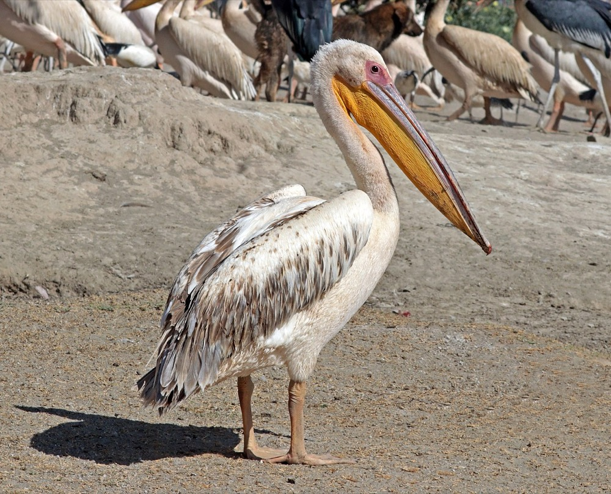
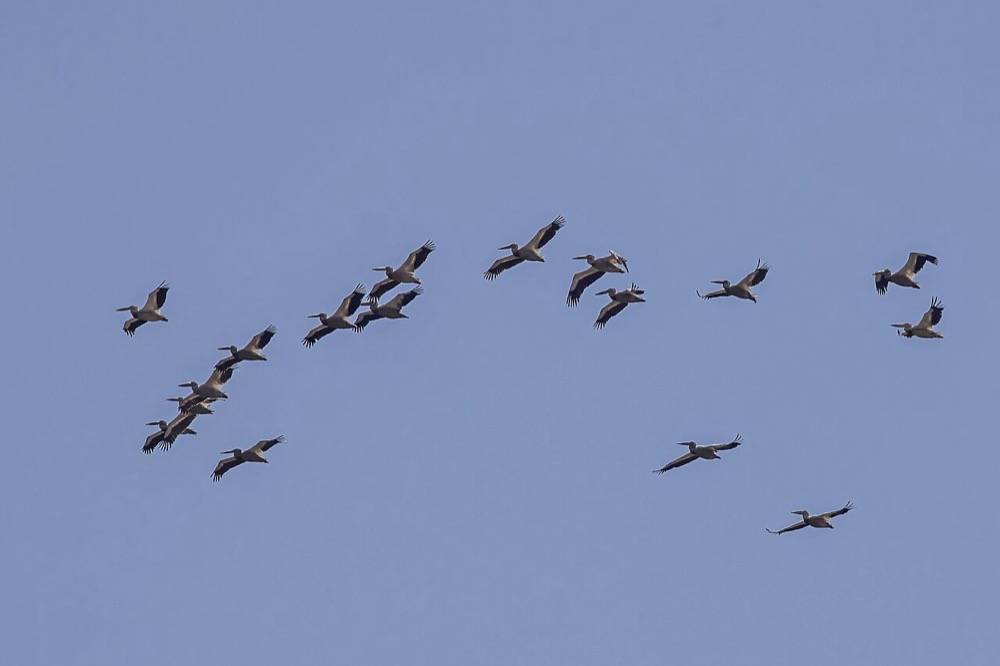
Great white pelican Around now
Pelican comun · Розов пеликан · Pelecanus onocrotalus
A huge white waterbird, length 140–180 cm, wingspan 2.3–3.6 m — one of Europe's largest flying birds. White-to-faintly-pink plumage with a vast yellow-orange throat pouch under a long flat bill; black flight feathers show boldly from below in flight. Often loafs in tight rafts.
More
Male vs female
Sexes alike; male larger with a longer, more swollen bill. In breeding season both sexes flush pinkish and develop a yellow breast patch and a small forehead knob; bare facial skin brightens.
Breeding
Breeds late spring–summer in dense ground colonies on remote reed islets and floating reed mats deep in the delta (notably around Lake Hrecisca/Buhaiova in the strictly protected core). Builds crude reed nests on the ground; highly colonial and sensitive to disturbance.
Migration
Summer breeder, arriving Mar–Apr, departing for Africa/E-Mediterranean Aug–Oct — Present early July: YES (peak breeding/feeding; the delta holds the EU's largest colony, a substantial share of the European population).
Behaviour & facts
Feeds co-operatively — groups swim in a horseshoe, beating wings to herd fish into shallows, then scoop in unison. Soars on thermals in spectacular synchronised flocks, often commuting far to feed. Largely silent away from colonies (low grunts there).
Where to see
Rafts on the open lakes and flocks soaring overhead on thermals from mid-morning; classic Danube Delta spectacle.
The world's largest pelican (length up to ~180 cm, wingspan up to ~3.5 m, heaviest of all pelicans). Greyish-white with curly, shaggy nape feathers and grey (not black-and-pink) legs. Flight feathers grey from below — duller than the great white's clean black-and-white pattern.
More
Male vs female
Sexes alike. In breeding plumage the loose crest curls strongly and the gular (throat) pouch flushes vivid orange-red; outside breeding the pouch fades to yellowish and plumage looks dingier grey.
Breeding
Breeds in small, scattered colonies on floating reed islands and isolated islets, often loosely mixed with great white pelicans. Lays very early (late Feb–Apr); a bulky nest mound of reeds.
Migration
Mainly resident to short-distance disperser; some present year-round, others move locally — Present early July: YES (adults and well-grown young around the lakes).
Behaviour & facts
Conservation flagship — globally Near Threatened, far scarcer than the great white; the delta and adjacent wetlands are a stronghold. Usually fishes singly or in small groups rather than in big cooperative flotillas. Susceptible to powerline collision, disturbance and overfishing.
Where to see
Singles or small groups on the quieter lakes and channels; look for the curly nape and grey legs to separate from great white pelican.
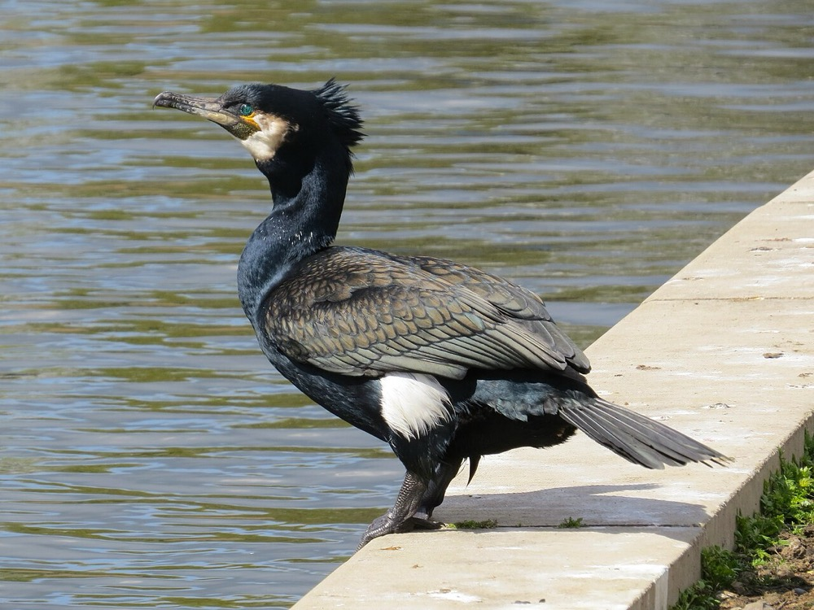
Great cormorant Around now
Cormoran mare · Голям корморан · Phalacrocorax carbo
Large blackish waterbird, 77–94 cm, wingspan ~120–150 cm, with a heavy hook-tipped bill and yellow-and-white bare facial skin. Glossy bronze-black; swims low with bill tilted up; perches upright with wings spread to dry.
More
Male vs female
Sexes alike. Breeding adults show a white throat/cheek patch, often a white thigh patch and white filoplumes on the head/neck; these fade after breeding to plainer black.
Breeding
Colonial tree-nester (also on reeds/bushes), often sharing heronries; builds stick nests, breeding spring into summer. Colonies can be large and noisy.
Pursuit-diver chasing fish underwater; wettable plumage forces the classic wing-spread drying posture. Gregarious; commutes in lines or V-formations between roosts and fishing waters.
Where to see
Everywhere — perched on snags, posts and dead trees on every lake; flying in lines low over the water.
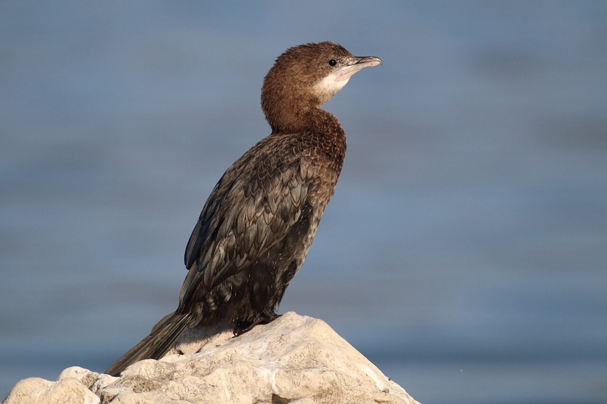
Pygmy cormorant Around now
Cormoran mic · Малък корморан · Microcarbo pygmaeus
Small, slim cormorant, only 45–55 cm with a short bill and long tail — roughly half the bulk of a great cormorant. Dark plumage; in breeding dress the head is rich brown with fine white speckling on head and body.
More
Male vs female
Sexes alike. Breeding adults gain a chestnut-brown head and scattered white flecks; non-breeders are plainer, duller dark brown with a paler throat.
Breeding
Colonial, nesting low in flooded willows, reeds and bushes, frequently within mixed heron/egret/ibis colonies in the reedbeds. Breeds spring–summer.
Migration
Summer breeder and partial resident — Present early July: YES (common in the reed-fringed channels).
Behaviour & facts
A conservation success story — recovered from scarcity, with the lower Danube/delta among its global strongholds. More tied to dense reed habitat than the great cormorant; flies with quick wingbeats showing a long-tailed, small-headed shape.
Where to see
Perched in reeds and low willows along narrow channels; the small, long-tailed silhouette flushing from the reed margins.
Herons, egrets & bitterns
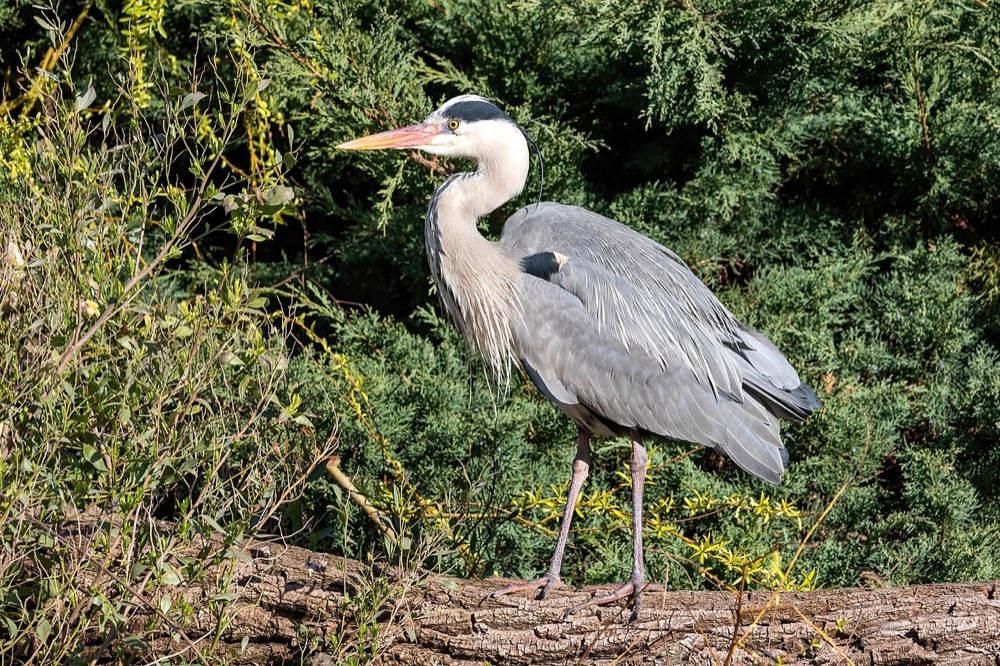
Grey heron Around now
Stârc cenușiu · Сива чапла · Ardea cinerea
Large grey-and-white heron, 84–102 cm, wingspan 1.5–1.95 m. Grey above, whitish neck with a black streaked foreneck, a black crest stripe over the eye, and a dagger-like yellowish bill. Flies on bowed grey wings with neck retracted into an S.
More
Male vs female
Sexes alike. In breeding condition the bill and legs flush brighter orange-pink and the head plumes lengthen; juveniles are duller grey with a greyer crown.
Breeding
Colonial tree-nester (heronries), building bulky stick nests; breeds early spring into summer, often the earliest colonial heron to start.
Migration
Resident/partial migrant, present all year — Present early July: YES (common and widespread).
Behaviour & facts
Patient stand-and-wait predator of fish, amphibians and small mammals; harsh "fraank" flight call. Solitary when feeding but colonial when nesting.
Where to see
Stalks the reed margins and shallow lake edges, motionless at the water's edge or flapping slowly between channels.
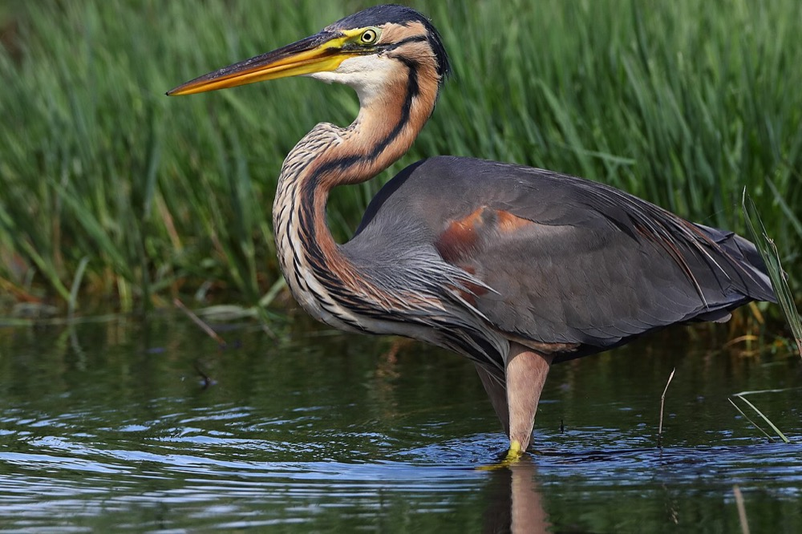
Purple heron Around now
Stârc roșu · Червена чапла · Ardea purpurea
Slimmer, darker and more reclusive than grey heron, 78–97 cm, wingspan 1.2–1.5 m. Rich rufous-and-slate plumage with a snaky chestnut neck boldly striped black, and a slender daggerlike bill. Long toes give a more "dangly-legged" flight profile.
More
Male vs female
Sexes similar; breeding adults show longer crest and lanceolate scapular plumes and brighter bare parts. Juveniles are warmer sandy-brown with less distinct neck striping.
Breeding
Breeds in dense reedbeds, nesting low among reed stems and reed-edge bushes rather than tall trees; loosely colonial. Breeds late spring–summer.
Migration
Summer breeder, arriving Apr, leaving by Sep–Oct for Africa — Present early July: YES (breeding in the reedbeds).
Behaviour & facts
Shy and skulking, keeping to reed cover far more than grey heron; the long-toed feet let it clamber over reeds. Hunts fish, frogs and large insects by stealth.
Where to see
Flushes from deep reedbeds along the narrow channels; watch reed margins at dawn for one freezing with neck extended.
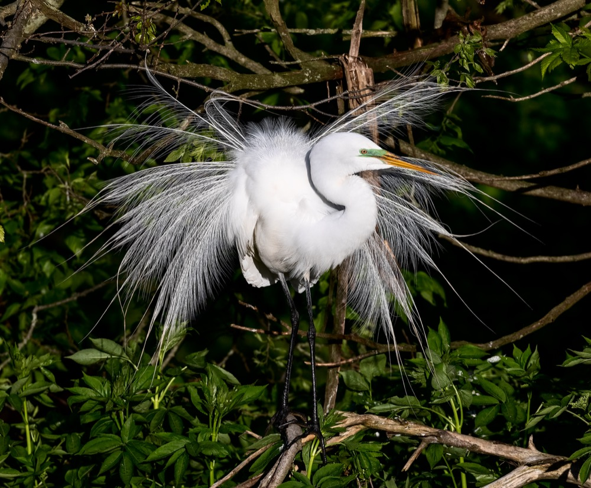
Great egret Around now
Egretă mare · Голяма бяла чапла · Ardea alba
Tall, all-white heron the size of a grey heron, 80–104 cm, wingspan ~1.3–1.7 m. Long kinked neck, dagger bill and black feet. Key ID: gape line extends behind the eye; legs dark.
More
Male vs female
Sexes alike. In breeding plumage it grows long, gauzy scapular plumes (aigrettes) over the back, the bill turns black and the facial skin/lores flush green; non-breeders have a yellow bill and lack the plumes.
Breeding
Colonial, nesting in reedbeds, flooded willows and trees, often in mixed colonies with other egrets, herons and ibis. Breeds spring–summer.
Migration
Resident/summer breeder, present all year in the delta — Present early July: YES (common; some still in trailing breeding plumage early summer).
Behaviour & facts
Slow, deliberate stalker of fish and amphibians in open shallows; far more willing to feed in the open than the smaller egrets. Once heavily hunted for its plumes — now a recovered breeder.
Where to see
Stands tall and conspicuous in open shallows and lake edges, often the most visible white heron across the lakes.
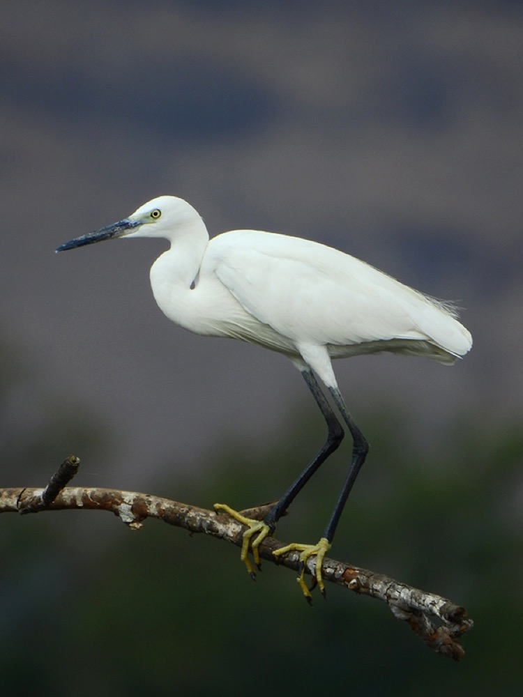
Little egret Around now
Egretă mică · Малка бяла чапла · Egretta garzetta
Small, dainty all-white heron, 55–65 cm, wingspan ~88–106 cm. Slim black bill, black legs and diagnostic yellow feet ("golden slippers"). Active, elegant feeder.
More
Male vs female
Sexes alike. Breeding adults sport two long ribbon-like nape plumes and filmy back/breast plumes, with reddish lores; non-breeders lack the long plumes.
Breeding
Colonial, nesting in trees, willows and reeds within mixed heronries. Breeds spring–summer.
Migration
Summer breeder (some now overwinter), arriving early spring — Present early July: YES (common).
Behaviour & facts
Lively forager — shuffles its yellow feet to flush prey, dashes and stabs at fish and invertebrates in shallows. The contrasting black legs/yellow feet are the quickest separation from other white egrets.
Where to see
Working the shallow margins and channel edges, dashing actively after fish — far more animated than the great egret.
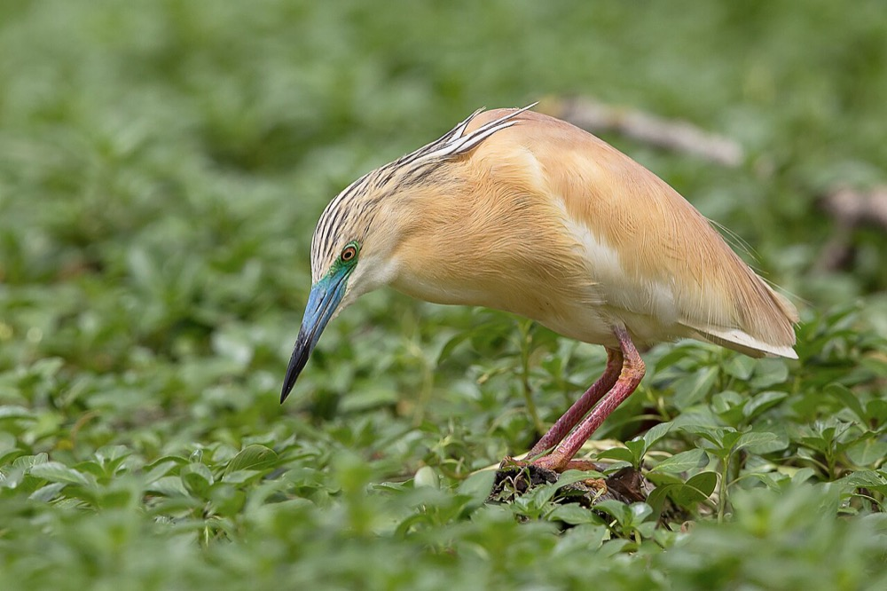
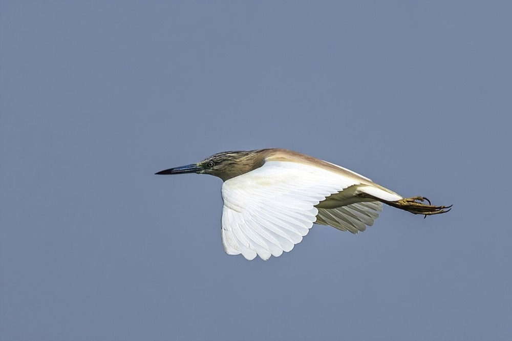
Squacco heron Around now
Stârc galben · Гривеста чапла · Ardeola ralloides
Small, squat, buff-coloured heron, 40–49 cm, wingspan ~71–86 cm. On the ground it looks warm sandy-buff and easily overlooked — but in flight it flashes startlingly white wings, seeming to change colour.
More
Male vs female
Sexes alike. Breeding adults gain a long shaggy black-streaked crest, golden-buff tones, and a blue-based bill with bright bare parts; non-breeders are duller and more streaked on the neck.
Breeding
Colonial, nesting low in flooded willows, bushes and reeds, typically inside mixed colonies with other egrets, night herons and pygmy cormorants. Breeds late spring–summer.
Migration
Summer breeder, arriving Apr–May, leaving by Sep for Africa — Present early July: YES (breeding in the colonies).
Behaviour & facts
A patient, crouched ambush hunter at reed edges, often hunched and motionless; the buff-to-white transformation in flight is its signature. Crepuscular tendencies.
Where to see
Hunched at the reed margins and on floating vegetation; the white-winged flash when it flushes is the giveaway.
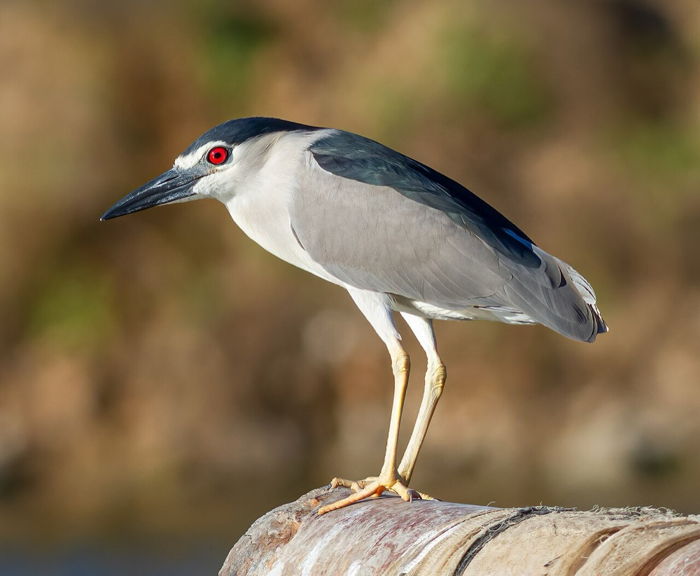
Black-crowned night heron Around now
Stârc de noapte · Нощна чапла · Nycticorax nycticorax
Stocky, short-necked, medium heron, 58–65 cm, wingspan ~105–112 cm. Adult is crisply marked: black crown and back, pale grey wings, white underparts, a stout black bill, red eye, and one or two long white head plumes.
More
Male vs female
Sexes alike. Juveniles look completely different — brown, heavily white-spotted above and streaked below (often confused with bitterns), with orange-yellow eyes.
Breeding
Colonial, nesting in trees, willows and reedbeds within mixed colonies; breeds spring–summer.
Migration
Summer breeder, arriving Mar–Apr, departing Sep–Oct — Present early July: YES (breeding, with brown juveniles around by early July).
Behaviour & facts
Mostly crepuscular and nocturnal — roosts hunched in trees by day, disperses to feed at dusk with a distinctive flat "kwok/quark" call overhead. Eats fish, amphibians and invertebrates.
Where to see
Roosting in waterside willows by day; flying out over the channels at dusk, often heard before seen.
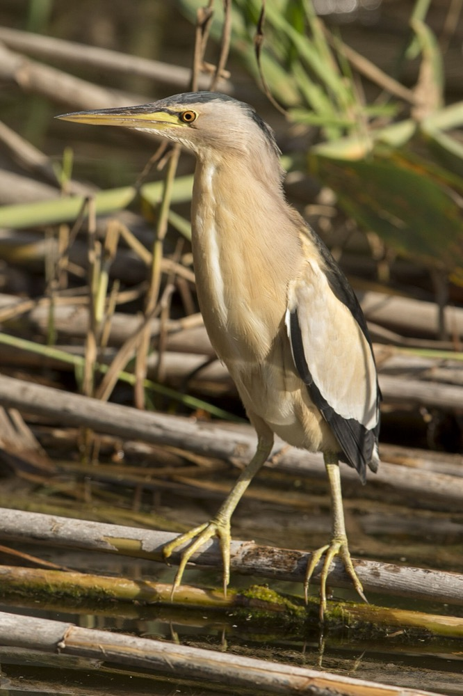
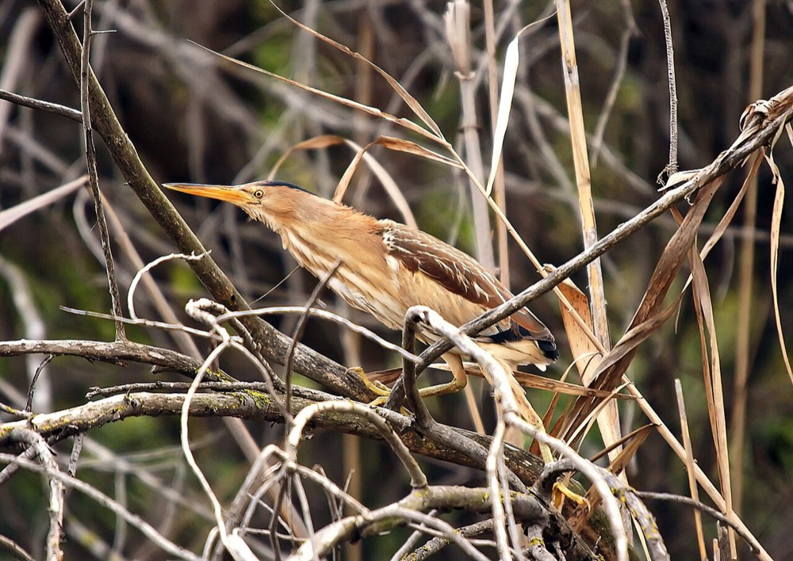
Little bittern Around now
Stârc pitic · Малък воден бик · Ixobrychus minutus
Europe's smallest heron, just 33–38 cm, wingspan ~52–58 cm — barely larger than a moorhen. Skulking reed-dweller; in flight shows large pale buff wing panels contrasting with dark flight feathers.
More
Male vs female
Strongly dimorphic. Male: black crown and back with bold creamy-buff wing patches. Female: duller, browner, with more streaked underparts and buffier (less clean) wing panels. Juveniles heavily streaked.
Breeding
Solitary nester deep in dense reedbeds and reedy bushes, building a small platform low over water; breeds late spring–summer.
Migration
Summer breeder, arriving Apr–May, leaving Aug–Sep for Africa — Present early July: YES (breeding; males may still call at dawn/dusk).
Behaviour & facts
Extremely secretive — adopts the upright "bittern stance" among reeds and clambers reed stems on long toes. Male gives a low, far-carrying frog-like "barking" advertising call. Flies low and briefly before dropping back into cover.
Where to see
Glimpsed flying low across narrow reed-lined channels before dropping in; scan reed edges at dawn.
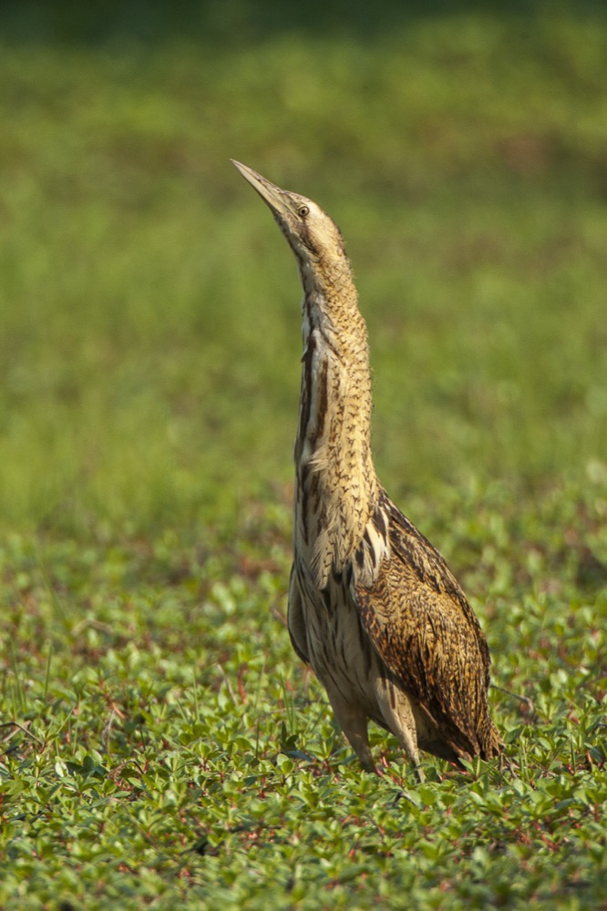
Great bittern Around now
Buhai de baltă · Голям воден бик · Botaurus stellaris
Bulky, thick-necked, cryptic heron, 64–80 cm, wingspan ~1.0–1.3 m. Beautifully camouflaged golden-buff, mottled and barred black — virtually invisible against reeds. Broad rounded wings; trails legs in flight.
More
Male vs female
Sexes similar (male averages larger); no marked plumage dimorphism. Cryptic patterning year-round.
Breeding
Solitary, nesting on a reed platform deep within extensive reedbeds; breeds spring–summer. Needs large, wet, undisturbed reed.
Migration
Resident/partial migrant, present year-round — Present early July: YES (present but very hard to see; the far-carrying "booming" song peaks Mar–Jun and tails off by July).
Behaviour & facts
Famous for the male's deep, foghorn-like "boom" that carries for kilometres. When alarmed it freezes vertically with bill skyward ("bitterning"), swaying with the reeds. Solitary and intensely secretive.
Where to see
Heard far more than seen from the big reedbeds; occasionally flies low over the reed tops on broad bowed wings.
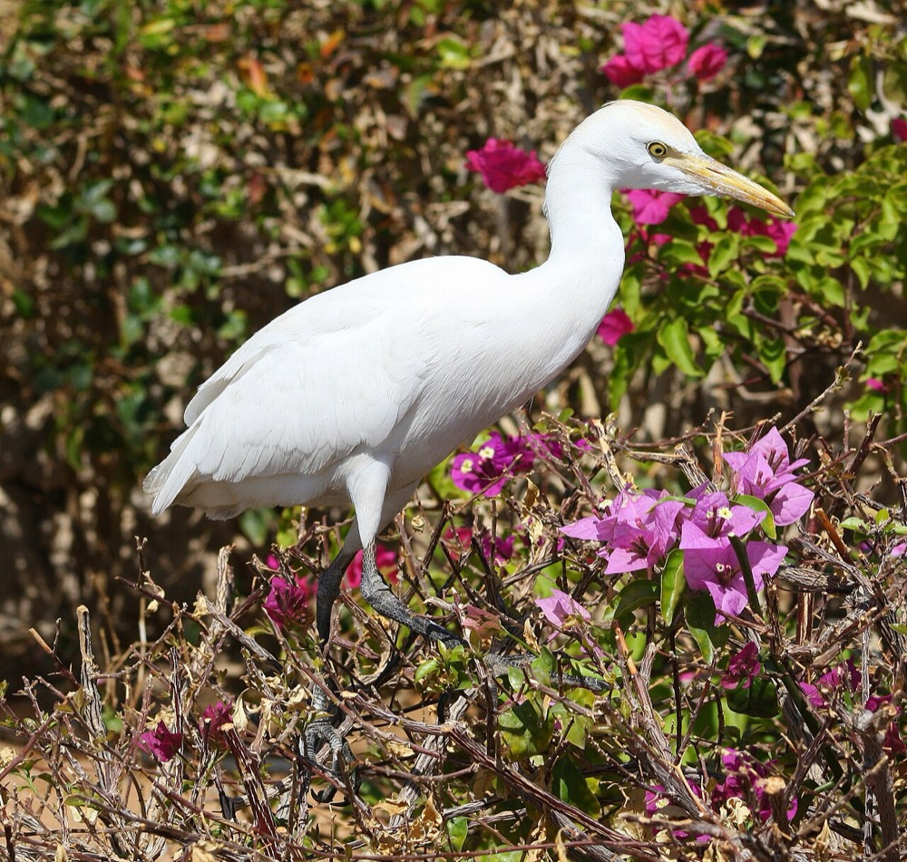
Cattle egret Around now
Stârc de cireadă · Биволска чапла · Bubulcus ibis
Small, compact white egret, 46–56 cm, wingspan ~88–96 cm, with a hunched posture, short thick yellow bill and a distinct jowly throat. Stockier and shorter-necked than little egret.
More
Male vs female
Sexes alike. Breeding adults flush buff-orange plumes on crown, breast and back, with bill and legs turning reddish-orange; non-breeders are all white with a yellow bill and dark legs.
Breeding
Colonial tree/bush nester in mixed heronries; a relatively recent and expanding colonist of the delta region. Breeds late spring–summer.
Migration
Summer breeder / increasingly resident, range expanding northward — Present early July: YES (breeding, numbers variable).
Behaviour & facts
The dry-ground egret — follows grazing cattle, horses and machinery to snap up insects flushed from the grass, rather than fishing. Often in fields away from open water.
Where to see
Among livestock and on damp pasture and dyke edges near the lakes, rather than at the waterline.
Ibises & spoonbills
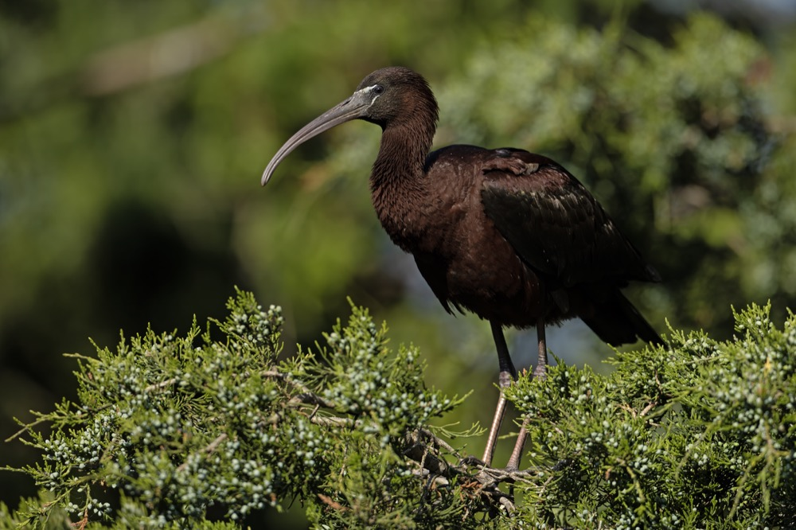
Glossy ibis Around now
Țigănuș · Блестящ ибис · Plegadis falcinellus
Medium wading bird, 48–66 cm, wingspan ~80–105 cm, looking blackish at distance but glowing deep chestnut with iridescent green-bronze wings up close. Long, decurved (down-curved) bill. Flies with neck extended, fast wingbeats and glides.
More
Male vs female
Sexes alike (male slightly larger). Breeding adults are rich chestnut-maroon with bottle-green gloss and a thin pale border to the bare facial skin; non-breeders and juveniles are duller dark brown with whitish flecking on the head/neck.
Breeding
Highly colonial, nesting low in flooded willows, bushes and reeds within large mixed colonies (with egrets, night herons, pygmy cormorants). Breeds late spring–summer.
Migration
Summer breeder, arriving Apr, leaving by Sep–Oct for Africa — Present early July: YES (breeding; flocks commuting to feed).
Behaviour & facts
Probes soft mud and shallow water with the curved bill for insects, leeches, worms and small aquatic prey. Gregarious, flying and feeding in flocks; lines and loose Vs commute between colony and marsh.
Where to see
Flocks probing flooded margins and wet meadows; lines of dark ibis flying low between the reedbeds.
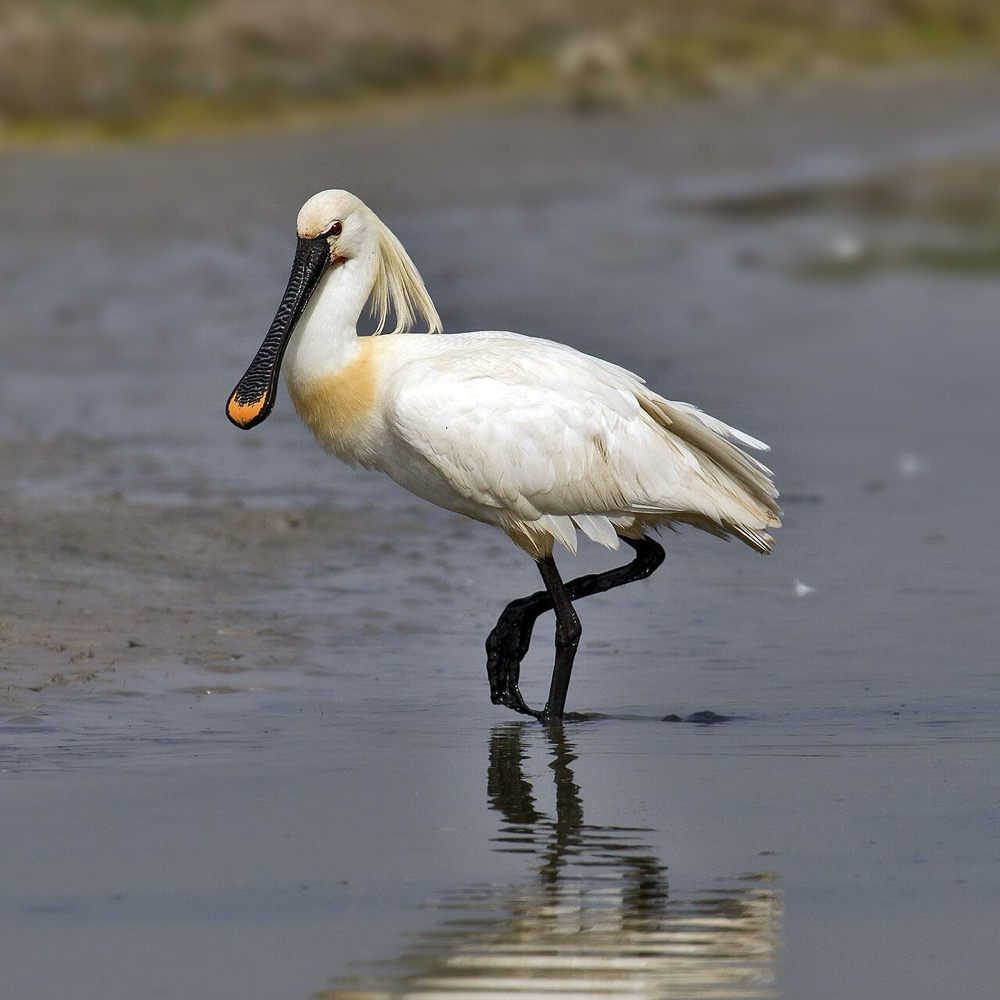
Eurasian spoonbill Around now
Lopătar · Лопатарка · Platalea leucorodia
Tall white waterbird, 80–93 cm, wingspan ~1.2–1.35 m, with an unmistakable long black bill ending in a flat yellow spoon-shaped tip. Flies with neck outstretched (unlike herons), in lines and Vs.
More
Male vs female
Sexes alike. Breeding adults gain a shaggy yellow nuchal crest and a buff-yellow breast band, with the bill-tip and throat patch brightening; non-breeders and juveniles lack the crest (juveniles show black wingtips and a pinkish-grey bill).
Breeding
Colonial, nesting in flooded willows, reeds and bushes in mixed colonies; breeds spring–summer.
Migration
Summer breeder, arriving Mar–Apr, leaving Sep–Oct — Present early July: YES (breeding; adults and fledged young feeding on the lakes).
Behaviour & facts
Feeds by sweeping the partly open spoon-bill side to side through shallow water, snapping shut on fish, shrimps and aquatic invertebrates — a distinctive scything walk. Sociable, often feeding in loose groups.
Where to see
Sweeping its bill through shallow open water on the lake edges; small parties flying in line with necks outstretched.
Swans, geese & ducks
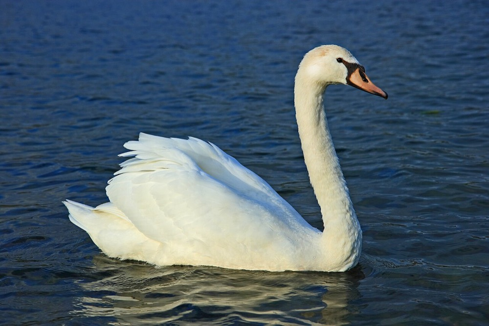
Mute swan Around now
Lebădă de vară · Ням лебед · Cygnus olor
A very large, all-white waterbird — one of the heaviest flying birds. Length ~125–170 cm, wingspan ~200–240 cm, weight up to ~12 kg. Recognised by its orange-red bill with a prominent black basal knob, the neck held in a graceful S-curve, and wings often arched ("busking" posture) over the back. Distinguished from the wild swans (whooper/Bewick's) by the orange (not yellow) bill and the black knob.
More
Male vs female
Plumage identical (both pure white). Sexes are told apart mainly by size and by the bill knob, which is markedly larger in the male (cob) than the female (pen), especially in the breeding season. Juveniles are grey-brown with a dull grey bill and lack the knob, gradually whitening over the first year.
Breeding
A resident breeder in the Danube Delta. Pairs are strongly territorial and largely monogamous (often life-long). They build a huge mound nest of reeds and vegetation at the water's edge among reedbeds and on lake margins; 5–8 eggs are typically laid in spring. By late June–early July, families with grey cygnets are a common sight on the delta lakes. Courtship involves synchronised head-turning and the classic "heart" posture of facing necks.
Migration
Resident / year-round breeder in the delta. — Present early July: YES (breeding adults and dependent cygnets present on the lakes through summer).
Behaviour & facts
Feeds mainly on aquatic vegetation, up-ending in shallow water and grazing. Despite the name it is not silent — it hisses, grunts and snorts, and its wings produce a distinctive throbbing/singing sound in flight. Can be highly aggressive when defending nest and young. IUCN Least Concern. A flagship, highly visible species on the delta's open lakes.
Where to see
Open water and reed-fringed margins of the larger delta lakes (e.g. Lacul Roșu, Matița, Furtuna) — almost guaranteed in summer.
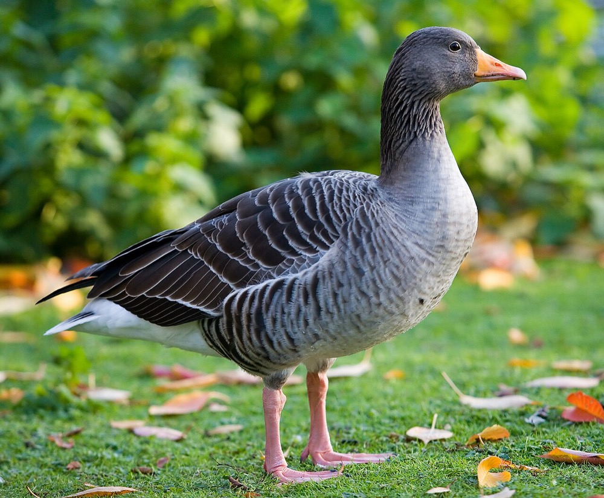
Greylag goose Around now
Gâscă de vară · Сива гъска · Anser anser
The largest and bulkiest of the grey geese and the ancestor of the domestic goose. Length ~74–91 cm, wingspan ~147–180 cm. Heavy-bodied, grey-brown overall with a paler belly, pink legs, and a stout orange-pink bill. In flight shows distinctly pale grey forewings (a key identification feature). Heavy, honking "aahng-ung-ung" calls like a farmyard goose.
More
Male vs female
Sexes are alike in plumage; the male (gander) averages slightly larger and bulkier-headed but they are not reliably told apart in the field. No seasonal plumage change. Goslings are yellow-grey down, becoming duller grey-brown juveniles lacking the neat barring of adults.
Breeding
A breeding resident in the Danube Delta, which holds important populations. Nests on the ground among dense reedbeds, reed islets and marshy lake margins, lining a shallow nest with vegetation and down; 4–6 eggs in spring. Pairs are monogamous and often long-term. By late June–early July, broods of well-grown goslings accompany the adults, and many birds are flightless during the wing moult.
Migration
Resident summer breeder in the delta (northern populations elsewhere are migratory). — Present early July: YES (breeding birds, moulting flocks and family parties present).
Behaviour & facts
Grazes on grasses, roots, leaves and waste grain, often feeding on land and in shallow water; gathers in noisy, gregarious flocks. Very vocal, with the classic loud honking. IUCN Least Concern. One of the characteristic large waterbirds of the delta's reedbeds and lakes year-round.
Where to see
Reed-fringed lakes, marsh margins and grazed shorelines throughout the delta; look for grazing family parties and moulting flocks in summer.
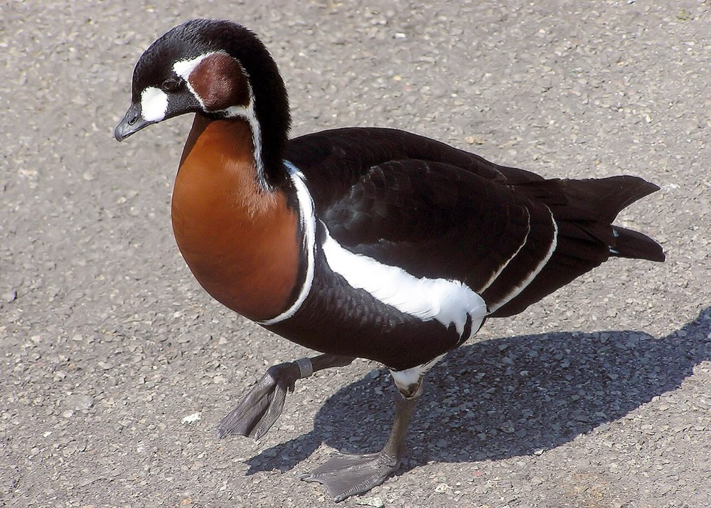
Red-breasted goose Not in July
Gâscă cu gât roșu · Червеногуша гъска · Branta ruficollis
A small, strikingly patterned goose — the smallest of the European geese. Length ~53–56 cm, wingspan ~115–135 cm. Boldly marked in black, white and chestnut-red: a rich rufous breast and cheek patch outlined with white, a black crown, neck and belly, and white flank stripe. Unmistakable; at distance looks dark and contrasting.
More
Male vs female
Sexes essentially identical in this vivid plumage, with the male averaging marginally larger. No distinct breeding/non-breeding plumage difference. Juveniles are duller with less defined head markings and more mottled, paler edging.
Breeding
Does NOT breed in the Danube Delta. It nests in the Arctic Siberian tundra (Taymyr, Gydan, Yamal peninsulas), often close to nests of birds of prey (e.g. peregrines) for protection. It is only a non-breeding visitor to the delta region.
Migration
Long-distance migrant; a winter visitor to the Western Black Sea coast (Dobrogea, Danube Delta and adjacent lakes). — Present early July: NO (an Arctic-breeding winter visitor, absent from the delta in summer; arrives in autumn and winters Oct–Mar). Globally threatened.
Behaviour & facts
Winters in large, tight flocks, grazing on grasses, winter cereals and crop stubble in coastal steppe and farmland, roosting on lakes and the sea. Highly social and vocal with squeaky, yelping calls. IUCN Vulnerable / globally threatened; the great majority of the world population winters along the Western Black Sea coast, making the region (and Bulgaria's coastal lakes/Romania's Dobrogea) of exceptional conservation importance — but this is a winter, not summer, phenomenon.
Where to see
Not present on a late-June/early-July trip. In winter, look at coastal Dobrogea lakes and farmland (e.g. Bulgaria's Shabla/Durankulak lakes and the southern Danube Delta fringes).
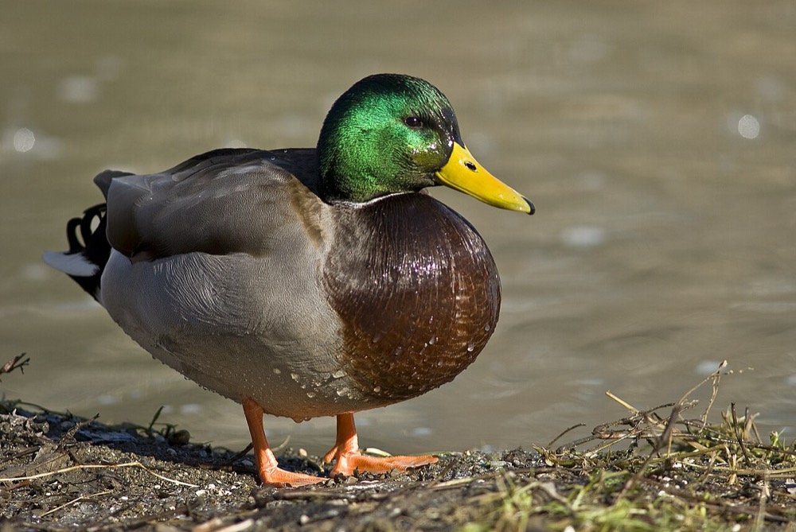
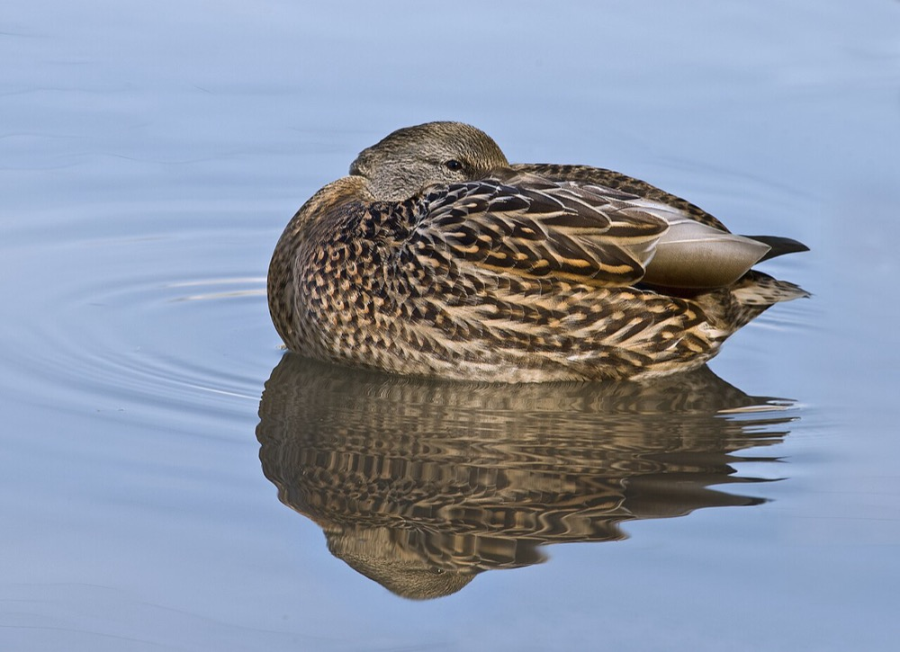
Mallard Around now
Rață mare · Зеленоглава патица · Anas platyrhynchos
The largest and most familiar dabbling duck of the delta — a heavy-bodied surface-feeding duck about 50–65 cm long with a 81–98 cm wingspan. Recognised by its bulky shape, orange legs, and (in both sexes) a glossy blue speculum bordered front and back with white, conspicuous in flight. The ancestor of almost all domestic ducks.
More
Male vs female
DRAKE in breeding dress has an iridescent bottle-green head, thin white neck-ring, purplish-brown breast, pale grey body and a yellow bill, with up-curled black central tail feathers. HEN is mottled buff-brown overall with a dark-streaked crown and eye-stripe and an orange-and-brown bill — superb camouflage on the nest. Eclipse plumage (Jun–Aug): drakes moult into a dull, hen-like brown plumage and become flightless for several weeks; they are then told from females mainly by the solid yellow-olive bill and slightly darker, more uniform tone.
Breeding
Common and widespread breeder across the whole Danube Delta — reedbeds, lake margins, floating vegetation and grassy islets. Pairs form in autumn/winter; nesting runs roughly March–July. The hen builds a down-lined nest in dense cover near water and incubates 8–13 eggs alone; ducklings are precocial and leave the nest within a day.
Migration
Resident in the delta, with numbers swelled by wintering birds from the north. Present early July: YES (resident breeder; broods and moulting/eclipse drakes are present through midsummer).
Behaviour & facts
A dabbling generalist — up-ends and surface-feeds on seeds, aquatic plants, invertebrates and grain. The female gives the classic loud descending "quack" series; the drake a quieter rasping "raeb." Highly social and gregarious outside the breeding season, gathering in large rafts. IUCN Least Concern; one of the most abundant waterfowl species counted in the delta (the single most numerous waterfowl in Romanian MidWinter censuses).
Where to see
Everywhere — expect mallards on virtually every lake, channel and backwater (Lake Furtuna, Matița, Isac, the Sontea channels).
A small, slim dabbling duck only slightly larger than a teal — about 37–41 cm long, wingspan 59–67 cm. The drake is unmistakable; both sexes show a pale blue-grey forewing panel in flight and a greenish speculum. A long-distance migrant and one of the delta's signature summer ducks.
More
Male vs female
DRAKE in breeding plumage has a chocolate-brown head with a broad, curving white supercilium ("eyebrow") sweeping back from the eye to the nape, a brown breast, vermiculated grey flanks and drooping black-and-white scapular plumes. HEN is mottled brown like a small mallard/teal but with a stronger face pattern — pale supercilium, dark eye-stripe and pale loral spot. Eclipse plumage (Jun–Aug): the drake loses the white eyebrow and becomes very female-like, retaining the pale blue-grey forewing as the best clue; this makes midsummer males genuinely hard to separate from hens.
Breeding
A summer breeder in the delta, favouring shallow, well-vegetated marshes, wet meadows and lake fringes with emergent cover. Arrives spring (Mar–Apr); nests on the ground in thick grass or sedge near water. The hen lays around 8–11 eggs and incubates alone; courtship features the drake's distinctive call and head display.
Migration
Summer breeder and passage migrant — it winters in sub-Saharan Africa and is one of very few European ducks that is wholly migratory. Present early July: YES (summer breeder; adults with broods are present, though by early July many drakes are already in cryptic eclipse).
Behaviour & facts
Dabbles and filters in shallow water for seeds, aquatic plants and invertebrates; often feeds quietly in dense vegetation and is easily overlooked. The drake gives a unique dry, rattling/crackling "knerr" (the source of the Romanian name cârâitoare). Shy and easily flushed. IUCN Least Concern globally but a SPEC species of European conservation concern, sensitive to wetland drainage — the delta is an important breeding stronghold.
Where to see
Quiet, reedy shallows and flooded meadows — scan the vegetated margins of lakes like Matița, Merhei and the Sontea–Fortuna complex early in the morning.
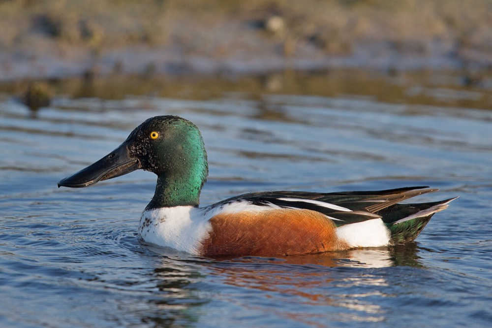
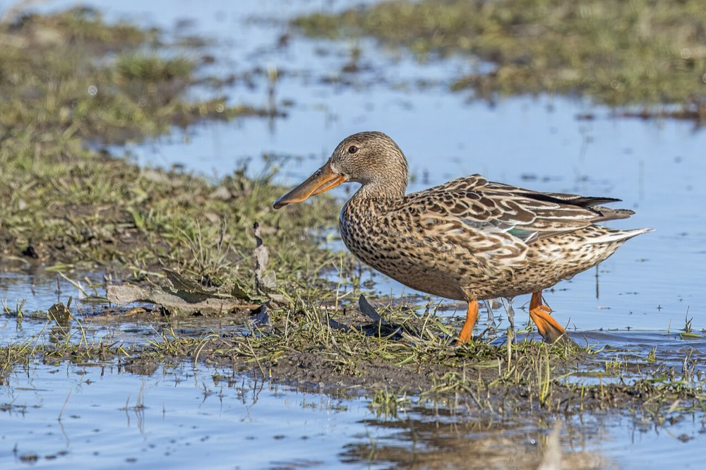
Northern shoveler Around now
Rață lingurar · Клопач · Spatula clypeata
A medium-sized dabbling duck, about 44–52 cm long with a 70–84 cm wingspan, instantly identified by its huge, spatulate (spoon-shaped) bill that is broader at the tip than at the base. The bill is lined with fine comb-like lamellae for filter-feeding. Sits low and front-heavy on the water. Both sexes show a pale blue forewing and green speculum in flight.
More
Male vs female
DRAKE in breeding plumage is boldly tricoloured — iridescent green head, white breast, chestnut flanks and belly, with the oversized dark bill and a yellow eye. HEN is mottled warm brown (mallard-like) but always told by the same outsized bill, here orange-edged, and by the pale blue forewing in flight. Eclipse plumage (Jun–Aug): the drake moults to a dull, mottled female-like brown but keeps the diagnostic large bill and yellow eye; flank colour becomes muted and patchy during this midsummer moult.
Breeding
Breeds in the delta in shallow open marshes, lake edges and wet grassland with low cover. Pairs arrive in spring; the hen nests on the ground near water and incubates roughly 8–12 eggs alone. Numbers are lower and more local as a breeder than mallard.
Migration
Breeder plus passage migrant (and winter visitor) in the delta. Present early July: YES (breeds locally; resident through summer including moulting/eclipse males, with much larger numbers arriving on passage in autumn).
Behaviour & facts
A specialist filter-feeder — swims with the bill skimming the surface, straining out plankton, tiny crustaceans, seeds and invertebrates; birds often feed in tight, slowly rotating circles to stir up food. Generally quiet; the drake gives a low "took-took," the hen a soft quack. Less gregarious than mallard, often in small groups. IUCN Least Concern; the delta's extensive shallow lakes make it an important feeding and passage site.
Where to see
Open shallow lakes and lagoons where it can surface-filter — look on broad waters such as Lake Isac, Uzlina and the shallow margins of the larger delta lakes.
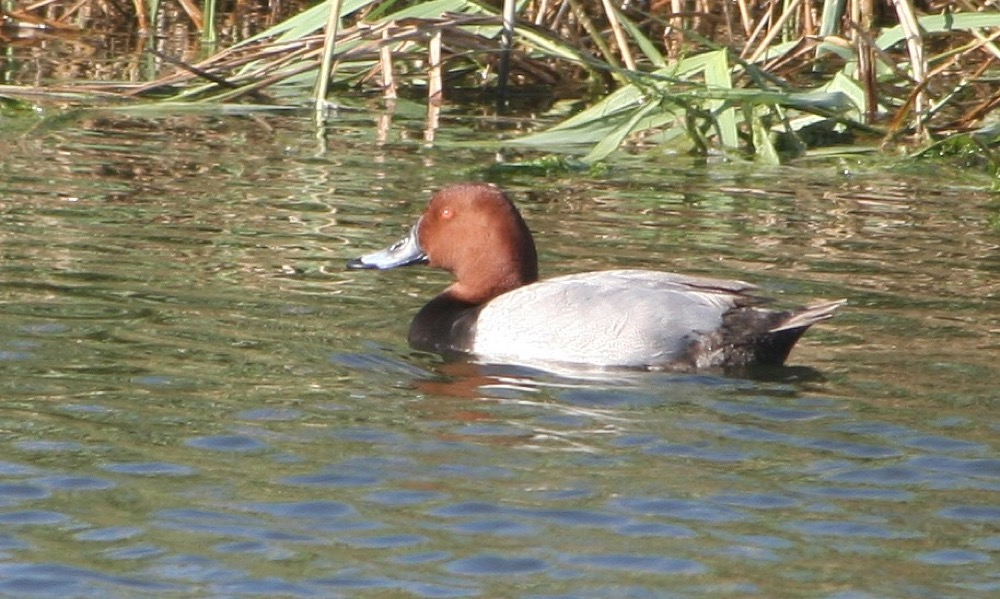
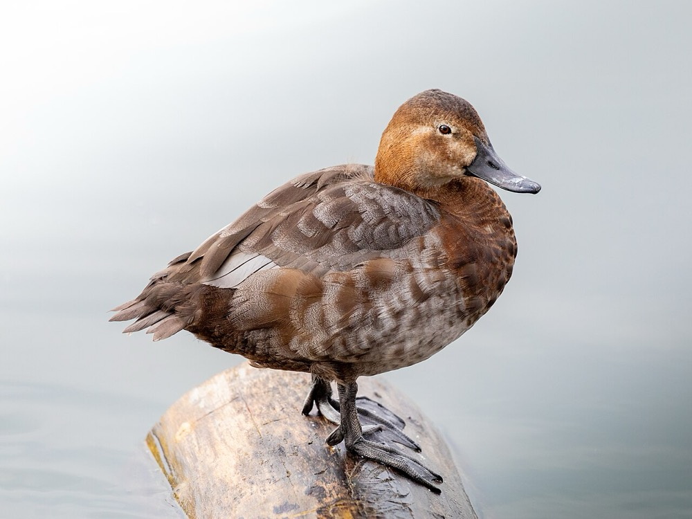
Common Pochard Around now
Rață cu cap castaniu · Кафявоглава потапница · Aythya ferina
A medium-large diving duck (length ~42–49 cm, wingspan ~72–82 cm) with a smoothly rounded, high-peaked head and a long sloping forehead/bill profile giving a distinctive "Roman nose" wedge shape. Compact, dumpy body sits low in the water. Often forms large rafts on open water.
More
Male vs female
DRAKE has a rich chestnut-red head and neck, black breast and stern, and a pale dove-grey body (finely vermiculated), with a red eye and a blackish bill crossed by a pale blue-grey band. HEN is dull greyish-brown with a warmer brown head, a paler "spectacle" face pattern around a dark eye, and a grey-brown body. In eclipse (mid–late summer) the drake becomes much duller and browner, resembling a washed-out female but retaining a redder head tone and reddish eye.
Breeding
Breeds across the Danube Delta's reed-fringed lakes and freshwater marshes from April–June. Nests in dense emergent vegetation (reeds, sedges) close to or over water; the hen builds a bulky nest and lays a clutch of greenish eggs, incubating alone. Loose colonies often form near gulls/grebes.
Migration
Partial migrant — a regular delta breeder and abundant passage/winter bird. Present early July: YES (resident breeders with broods on the lakes through summer).
Behaviour & facts
Feeds mainly by diving for aquatic plants, seeds, roots and some invertebrates in shallow lake water; also up-ends and dabbles. Generally quiet — drakes give soft wheezing/whistling notes in display, hens a harsh growl. Highly gregarious, forming dense rafts. Conservation status: globally Vulnerable (IUCN) due to steep declines, so delta populations matter. The Danube Delta holds large breeding and staging numbers.
Where to see
Open water of the larger delta lakes (e.g. Lake Razim, Matița, Furtuna) — scan rafts of diving ducks for the chestnut-headed, grey-bodied drakes.
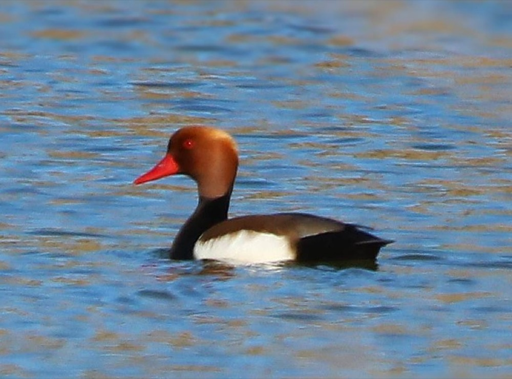
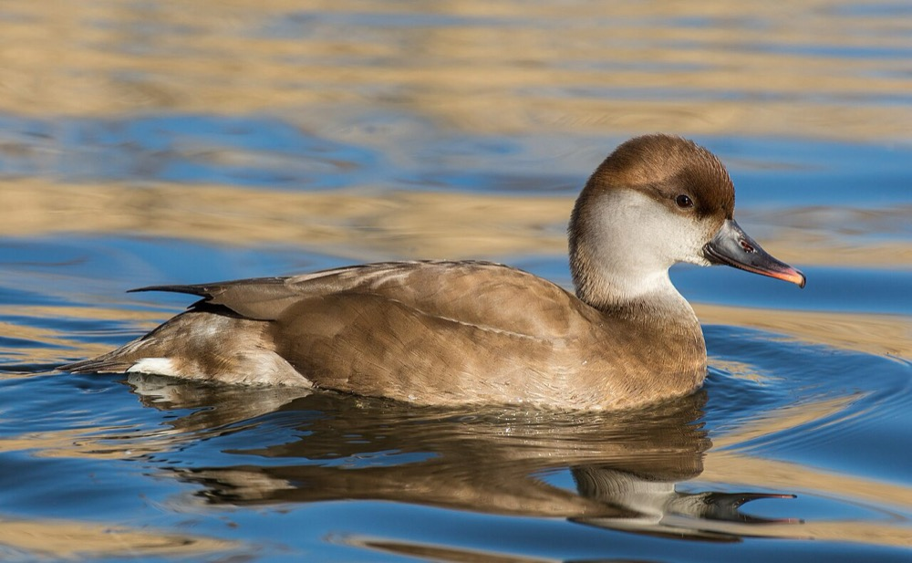
Red-crested Pochard Around now
Rață cu ciuf · Червеноклюна потапница · Netta rufina
A large, bulky diving duck (length ~53–57 cm, wingspan ~84–88 cm) — noticeably bigger and longer-bodied than the other pochards. The drake has a striking rounded orange "bouffant" head and a bright coral-red bill. Floats high and buoyant, more like a Netta than the low-sitting Aythya.
More
Male vs female
DRAKE is unmistakable: a fluffy golden-orange head, bright red bill, black breast and underparts, brown back, and conspicuous white flanks; shows a broad white wing-bar in flight. HEN is plain greyish-brown with pale buff-white cheeks and lower face contrasting against a darker brown crown and nape (a "two-tone face"), and a dark bill usually tipped pinkish. In eclipse (summer) the drake resembles the female but keeps a redder bill and bolder white wing markings.
Breeding
Breeds locally in the delta's vegetated freshwater lakes and lagoons from May; nests in dense waterside vegetation, often on small islets or reed margins. Pairs court conspicuously, the drake performing head-raising and sneezing-like displays; the hen lays a clutch of pale eggs and rears the brood, sometimes brood-parasitizing other ducks.
Migration
Partial migrant and expanding breeder. Present early July: YES (summer breeder with families on delta lakes).
Behaviour & facts
Feeds on aquatic vegetation by both diving and up-ending/dabbling (more surface-feeding than typical Aythya). Largely silent; drakes give a wheezing display call, hens a harsh growl. Sociable, mixing with other diving ducks. Not threatened (IUCN Least Concern) and notably expanding its range westward/northward in Europe; the Danube Delta is a significant eastern European breeding stronghold.
Where to see
Sheltered, plant-rich lakes and channels (e.g. around Sfântu Gheorghe arm and the Razim–Sinoe lagoon complex) — the big orange-headed drakes stand out among rafts of ducks.
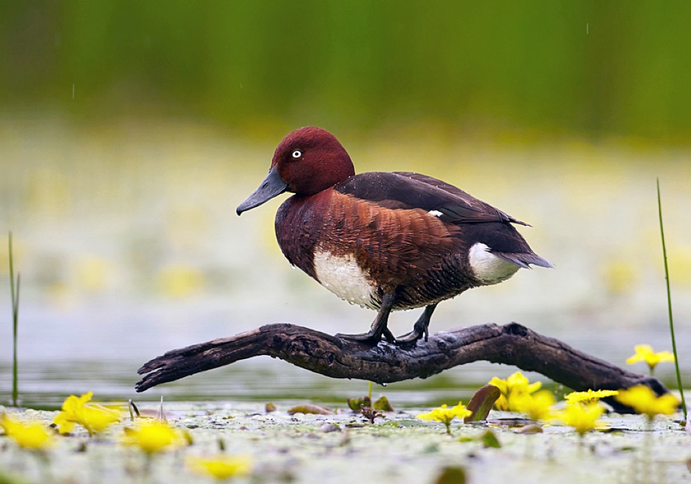
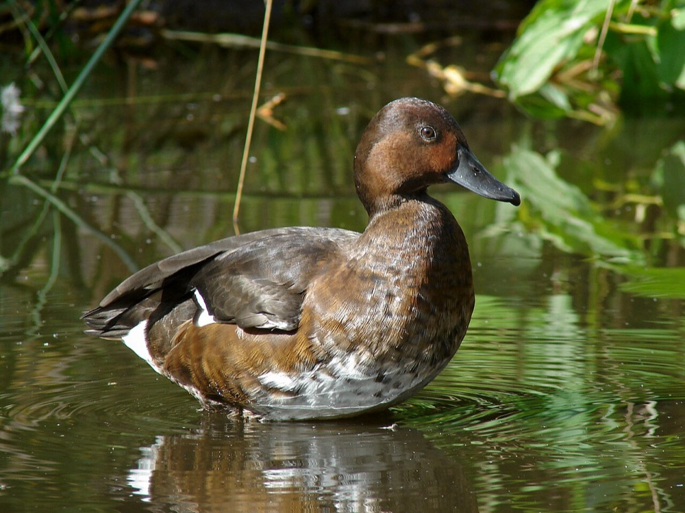
Ferruginous Duck Around now
Rață roșie · Белоока потапница · Aythya nyroca
A small, neat, dark diving duck (length ~38–42 cm, wingspan ~60–67 cm). Rich mahogany-chestnut overall with a domed peaked crown and a slim dark bill. The key field marks are a striking white undertail patch (vent) and, in flight, a broad gleaming white wing-bar; both contrast against the dark plumage.
More
Male vs female
DRAKE is deep, glossy reddish-chestnut on head, neck, breast and flanks, with a blackish back, a brilliant white iris (its "white eye"), and a clean white undertail. HEN is similar but duller and browner, lacking gloss, and crucially has a dark brown eye (not white). In eclipse the drake becomes duller, approaching the female, but retains the pale eye and bold white vent that separate the species at all seasons.
Breeding
A characteristic delta breeder of well-vegetated, shallow freshwater pools, reedbeds and overgrown lagoons; nests May–June in dense emergent cover or on floating mats close to water, the hen laying a clutch of pale buff eggs and tending the brood among the reeds. Favours secluded, plant-choked water bodies.
Migration
Summer breeder and passage migrant. Present early July: YES (breeds in the delta; broods present, with numbers building toward late-summer staging concentrations).
Behaviour & facts
Feeds by diving and dabbling for aquatic plants, seeds and invertebrates in shallow, weedy water; often skulks at reed edges rather than on open water. Generally quiet — drakes give a soft wheezing call, hens a harsh "kerr". Globally Near Threatened (IUCN) with a declining European population, making the Danube Delta one of its most important breeding sites in Europe — a key conservation site for the species.
Where to see
Quiet, reed-fringed, plant-rich pools and backwaters (e.g. Somova–Parcheş lakes near Tulcea, and the densely vegetated interior channels) — look for a small dark duck with a flashing white undertail at the reed edge.
Grebes
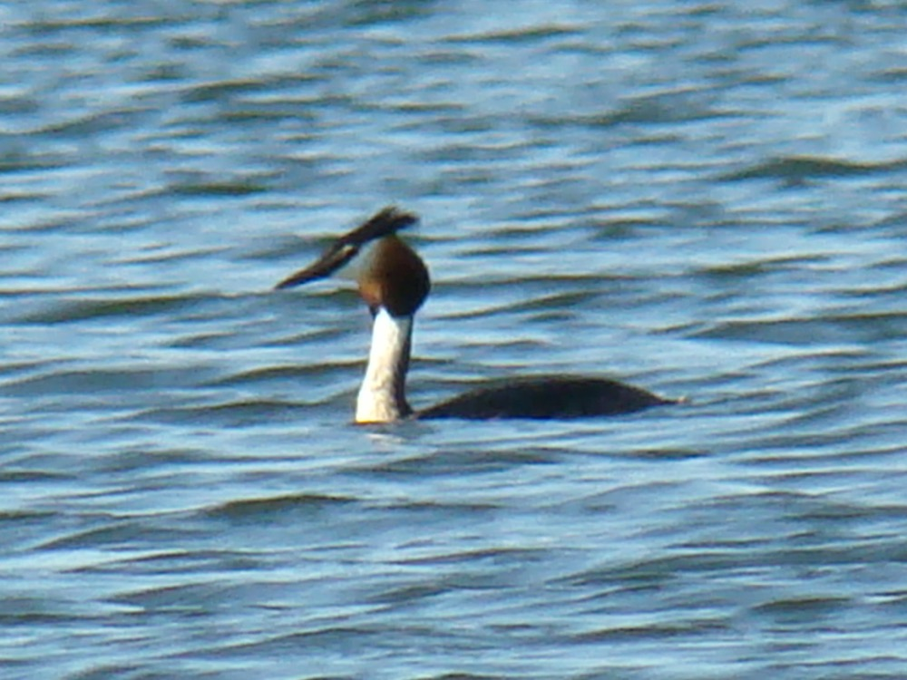
Great crested grebe Around now
Corcodel mare (SOR / Societatea Ornitologică Română) · Голям гмурец (БДЗП / BSPB) · Podiceps cristatus
The largest European grebe — an elegant, long-necked diving waterbird of open water. Length ~46–51 cm, wingspan ~59–73 cm. Recognise it by the slender white neck, dagger-like pink bill, and in breeding dress the spectacular black double crest plus a chestnut-and-black ruff (tippet) framing the face. Rides low in the water; flies with neck outstretched and feet trailing, showing white wing patches.
More
Male vs female
Sexes look alike (males average slightly larger with a marginally fuller ruff — not reliable in the field). Breeding adults have the full crest and ruff; in non-breeding plumage the ruff is shed, the crest is reduced, and the face becomes plain white, leaving a clean black cap.
Breeding
A common summer breeder across the delta's lakes and reed-fringed channels. Builds a floating nest of waterweed anchored to emergent vegetation. Famous for the elaborate courtship "weed dance": both birds dive, surface with bills full of waterweed, then rise breast-to-breast and paddle furiously, swaying the weed from side to side. Striped, zebra-faced chicks ride on the parents' backs.
Migration
Summer breeder in the delta; some southern/coastal birds resident, northern populations move to ice-free water in winter. Present early July: YES (peak breeding season — adults on nests and ferrying chicks on their backs).
Behaviour & facts
Pursues fish underwater by diving; also takes insects and amphibians. Swallows its own feathers to pad the stomach. Far-carrying barking and growling calls during courtship. Least Concern (IUCN); a flagship of recovered wetland populations — the species whose Victorian persecution for "grebe fur" helped launch modern bird protection. The delta holds large breeding numbers.
Where to see
Open water of Lake Roșu, Matița and Furtuna — scan for the pale long-necked profile and watch pairs displaying near reedbeds.
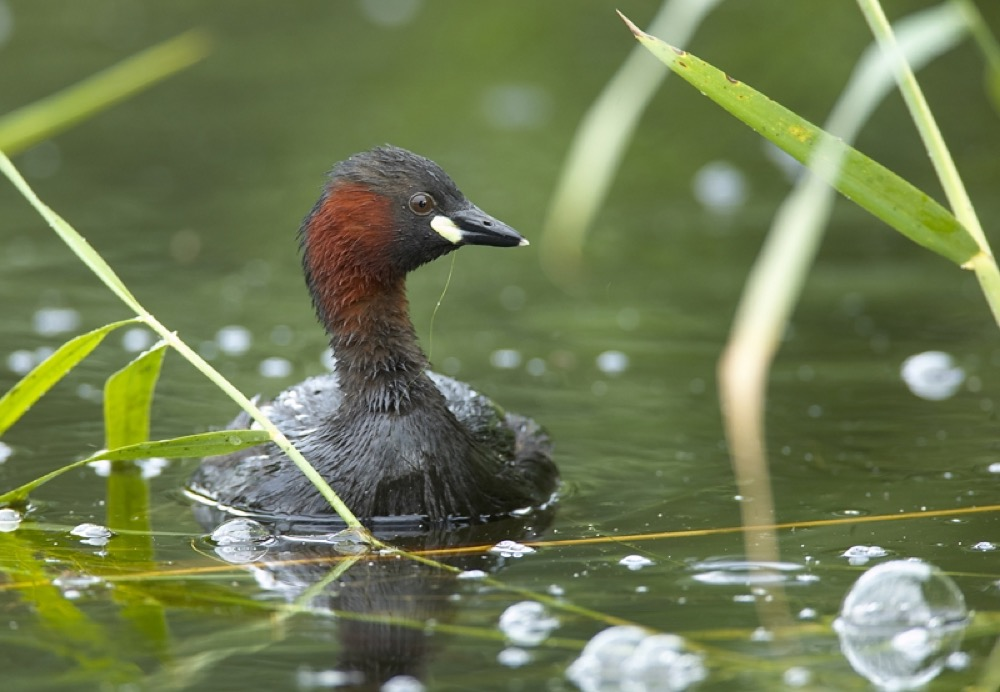
Little grebe (Dabchick) Around now
Corcodel mic (SOR / Societatea Ornitologică Română) · Малък гмурец (БДЗП / BSPB) · Tachybaptus ruficollis
The smallest European grebe — a tiny, dumpy, almost tailless diving bird. Length ~23–29 cm, wingspan ~40–45 cm. Looks like a fluffy "powder-puff" with a rounded rear end. In breeding plumage it is dark brown above with bright chestnut cheeks and throat and a conspicuous pale lime-green/yellow gape patch at the base of the bill.
More
Male vs female
Sexes are alike (no reliable visible dimorphism). Breeding birds show the chestnut neck and yellow gape spot; non-breeding (winter) birds are much plainer — buffish-brown with a paler throat and the gape spot dull or absent.
Breeding
A widespread summer breeder on smaller, well-vegetated pools, ditches and lake margins throughout the delta. Builds a floating weed nest hidden among emergent vegetation; covers the eggs with wet weed when leaving. Striped chicks are carried on the back.
Migration
Summer breeder in the delta; partly resident, with northern birds withdrawing south in winter. Present early July: YES (breeding throughout the warm months on sheltered waters).
Behaviour & facts
Dives for aquatic insects, larvae, small fish and crustaceans. Highly vocal — gives a loud, far-carrying whinnying trill that often reveals its presence before it is seen. Shy and skulking, diving instantly at disturbance. Least Concern (IUCN); abundant but easily overlooked in the delta's quiet backwaters.
Where to see
Sheltered reed-edged channels and small lakes (e.g. the canals around Mila 23 and quiet bays of Lake Furtuna) — listen for the whinnying trill.
A small grebe, slightly larger than the little grebe. Length ~28–34 cm, wingspan ~56–60 cm. Breeding adult is striking: black head and neck, a peaked forehead, a slightly uptilted thin bill, a fan of golden-yellow ear plumes spraying back from a glowing red eye, and rich chestnut flanks. The steep forehead and upturned bill separate it from the flat-crowned Slavonian grebe.
More
Male vs female
Sexes are alike. Breeding plumage as above; non-breeding birds are dingy black-and-white — dark cap extending below the eye onto dusky cheeks (a "smudged" face), grey neck, and no golden tufts.
Breeding
A localised summer breeder in the delta, favouring shallow lakes with rich emergent and floating vegetation, often in loose colonies and frequently alongside colonies of gulls or terns for protection. Floating weed nest; downy chicks carried on the back.
Migration
Summer breeder and passage migrant; mainly migratory, wintering on coasts and southern lakes. Present early July: YES (breeding birds present on suitable colonial lakes in summer).
Behaviour & facts
Feeds mainly by diving for aquatic insects and their larvae plus small invertebrates. More colonial and sociable than other grebes, gathering in large flocks at favoured sites. Soft, mellow whistling and trilling calls at breeding sites. Least Concern (IUCN), though colonies are patchy and depend on stable water levels; the delta is an important regional breeding area.
Where to see
Shallow vegetated lakes with tern/gull colonies — scan colonial waterbird sites; the golden ear-tufts and red eye are unmistakable in good light.
A plump, slate-black waterbird the size of a small duck. Length ~36–42 cm, wingspan ~70–80 cm. Instantly told by the gleaming white bill and white frontal shield on the forehead against the all-dark body. Greenish legs with distinctive lobed (not webbed) toes. Sits high in the water and dives with a little forward jump.
More
Male vs female
Sexes are alike (males average a slightly larger frontal shield — not a field mark). No seasonal plumage change; juveniles are paler grey with whitish throat and breast and lack the bold white shield.
Breeding
An abundant summer breeder, and partly resident, across virtually all the delta's lakes and channels. Builds a bulky nest of dead reeds and waterweed among emergent vegetation, often a substantial platform. Aggressively territorial — pairs fight noisily, rearing up and striking with their lobed feet. Chicks have bare red-and-blue heads with orange down.
Migration
Resident/summer breeder in the delta, with large numbers of additional birds wintering on open water. Present early July: YES (one of the most numerous breeding waterbirds in summer).
Behaviour & facts
Omnivorous — grazes waterweed, grass and algae, and takes small invertebrates; dives and up-ends to feed. Forms huge rafts outside the breeding season. Loud, explosive "kowk" and metallic "pitt" calls. Least Concern (IUCN); a keystone abundant species and important prey for marsh harriers and white-tailed eagles in the delta.
Where to see
Everywhere on open water and lake edges — Lake Roșu, Isac, Matița and any reed-fringed channel; impossible to miss.
A medium-small, dark waterbird of vegetated margins. Length ~30–38 cm, wingspan ~50–62 cm. Slaty-blackish body with a brownish back, a bold white line along the flanks, and white outer undertail coverts flicked conspicuously as it swims and walks. Adult has a bright red bill with a yellow tip and a red frontal shield; long green-yellow legs with long unwebbed toes. Swims with a jerky head-nodding motion.
More
Male vs female
Sexes are alike (males average slightly larger; not reliable in the field). No marked seasonal change. Juveniles are dull brown with a dull greenish-brown bill and no red shield.
Breeding
A common summer breeder, and partly resident, on well-vegetated ditches, pool edges and reedy channels throughout the delta. Builds a nest platform of plant material in or just above the water amid dense cover; often raises two or more broods, and young of the first brood may help feed later ones. Chicks are black and downy with a small reddish bill-shield.
Migration
Resident/summer breeder in the delta; northern populations migratory. Present early July: YES (actively breeding in waterside vegetation).
Behaviour & facts
Omnivorous — eats water plants, seeds, insects, snails and the occasional egg; feeds while walking on floating vegetation and bankside. More skulking than the coot, keeping near cover and frequently flicking its tail. Loud, abrupt "kurruk" and "kik" calls. Least Concern (IUCN); ubiquitous but unobtrusive in the delta's vegetated waterways.
Where to see
Edges of reedbeds, lily-covered backwaters and canal banks around Mila 23 and Lake Furtuna — watch for the white tail-flick at the vegetation line.
A slim, laterally compressed, very secretive rail of dense reedbeds — "thin as a rail." Length ~23–28 cm, wingspan ~38–45 cm. Recognise it by the long, slightly downcurved red bill, slate-grey face and underparts, warm brown black-streaked upperparts, boldly black-and-white barred flanks, and a buff undertail flicked as it skulks. Long toes; usually creeps through cover rather than swimming.
More
Male vs female
Sexes are very similar (males average slightly larger with a marginally longer bill — not safely told apart in the field). No seasonal plumage change. Juveniles are duller, with a browner face and a less clean red bill.
Breeding
A summer breeder, and partly resident, in the delta's extensive reedbeds and flooded marsh — ideal habitat, so it is widespread though rarely seen. Builds a cup nest of leaves and stems low in dense waterside vegetation. Chicks are glossy black and downy, leaving the nest soon after hatching.
Migration
Resident/summer breeder in the delta, with numbers swollen by wintering migrants. Present early July: YES (breeding within the reedbeds, though heard far more often than seen).
Behaviour & facts
Omnivorous — probes mud for invertebrates, also takes small fish, amphibians and plant matter, and can be predatory in winter. Famous for its bizarre call: a pig-like squealing and grunting "sharming" that erupts from deep cover. Extremely shy, slipping through reeds; best detected by voice. Least Concern (IUCN); a characteristic but elusive reedbed species of the delta.
Where to see
Dense reed and sedge margins (e.g. the reed-choked channels off Lake Matița) — listen at dawn/dusk for the squealing call; sightings are usually brief glimpses at a reed edge.
Waders / shorebirds
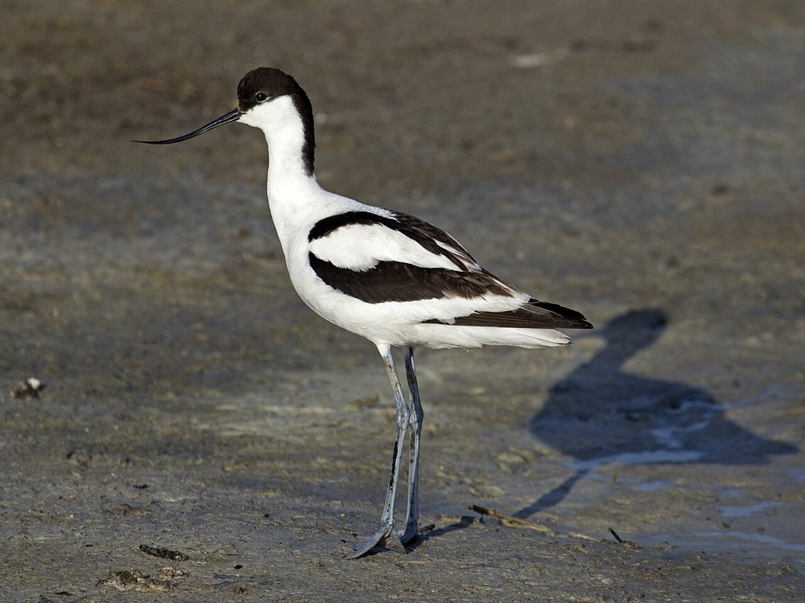
Pied avocet Around now
Ciocîntors · Саблеклюн · Recurvirostra avosetta
Unmistakable, elegant black-and-white wader, 42–45 cm long, ~77–80 cm wingspan, with long blue-grey legs and a slender, strongly upcurved black bill. Feeds with a side-to-side scything sweep through shallow water and soft mud.
More
Male vs female
Sexes alike in plumage; males average slightly larger with a longer, less sharply curved bill — not separable in the field.
Breeding
A colonial ground-nester on bare mud, shell banks, dykes and islets in saline lagoons and salt-pans. Nests May–June in loose colonies, vigorously mobbing predators; lays ~4 eggs in a simple scrape.
Migration
Summer breeder and passage migrant — Present early July: YES (breeding birds with young on the lagoons).
Behaviour & facts
Highly social; noisy kluit calls at colonies. The Delta's brackish lagoons and salt-pans (e.g. near Histria/Sinoie) are a regional stronghold.
Where to see
Shallow brackish lagoons and salt-pans of the southern Delta and Razim–Sinoie complex.
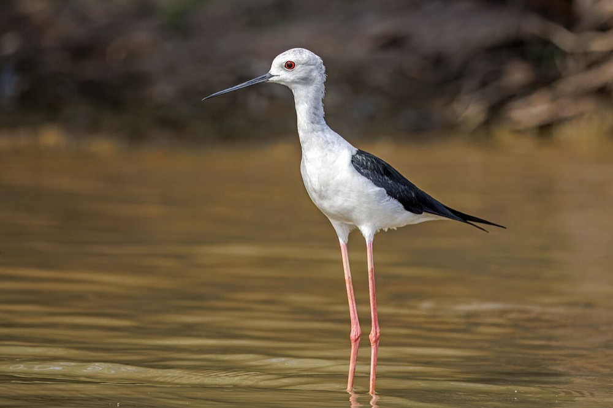
Black-winged stilt Around now
Piciorong · Кокилобегач · Himantopus himantopus
Slim black-and-white wader (~33–36 cm) on absurdly long pink-red legs — the longest legs relative to body of any bird. Needle-thin straight black bill; legs trail far beyond the tail in flight.
More
Male vs female
Mild dimorphism — male has a glossy greenish-black back and (often) more black on the head/nape; female's back is browner. Both show variable dark head markings.
Breeding
Loosely colonial; nests on the ground near shallow fresh or brackish water, on mud, low vegetation or small islets. Breeds May–June, very demonstrative in defence of nest and chicks.
Migration
Summer breeder — Present early July: YES (adults and well-grown young at shallow pools).
Behaviour & facts
Picks insects, crustaceans and larvae delicately from the surface; gives a yapping kik-kik-kik alarm. Favours shallow, sparsely vegetated wetland margins.
Where to see
Shallow lagoon edges, fishponds and flooded margins throughout the Delta.
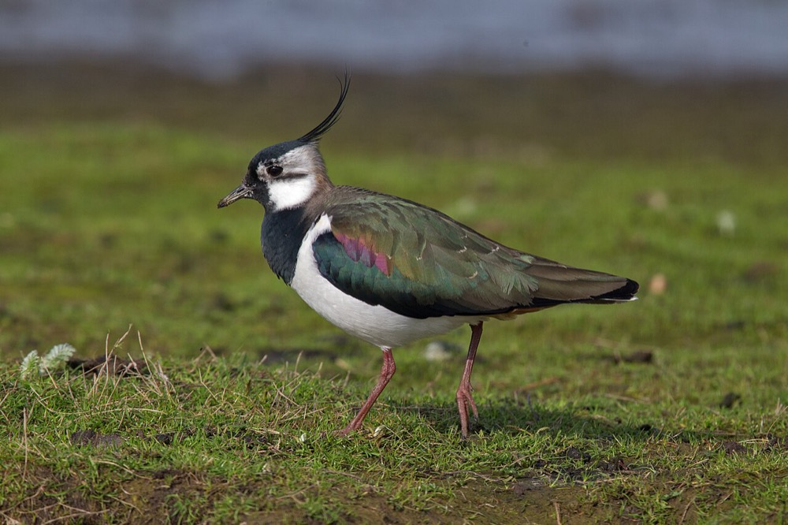
Northern lapwing Around now
Nagâț · Калугерица · Vanellus vanellus
Round-winged plover (~28–31 cm) that looks black-and-white at distance but shows iridescent green-and-purple upperparts up close, plus a wispy upcurved crest. Broad, paddle-shaped wings give a distinctive floppy flight.
More
Male vs female
Male has a longer crest and a cleaner, more solidly black throat/breast band in breeding plumage; female's throat is flecked white and crest shorter.
Breeding
Ground-nester on damp meadows, pasture and marsh edges; a shallow scrape lined with grass. Famous tumbling, twisting display flight with a wheezy pee-wit call. Breeds Apr–June.
Migration
Breeder and passage/winter visitor — Present early July: YES (breeders and post-breeding flocks gathering on wet meadows).
Behaviour & facts
Forms flocks outside the breeding season; feeds on invertebrates with a run-stop-pick gait. Wet grazing meadows in the Delta are key habitat.
Where to see
Wet meadows, pasture and drained polder margins around the Delta's lakes.
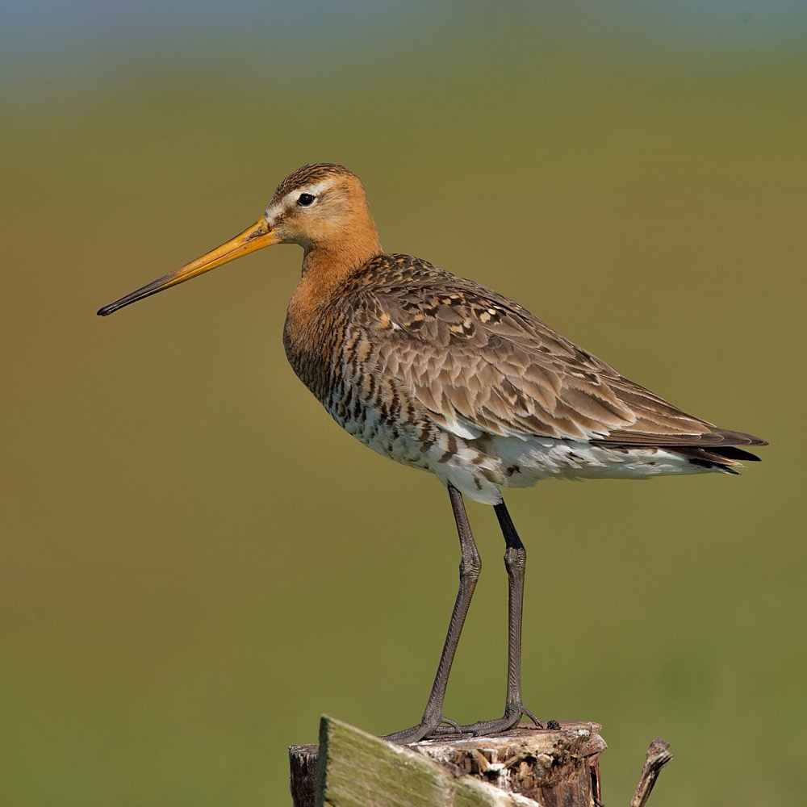
Black-tailed godwit Around now
Sitar de mal · Черноопашат крайбрежен бекас · Limosa limosa
Tall, long-legged wader (~37–42 cm) with a very long, nearly straight bill (pink-based, dark-tipped). Breeding birds have an orange-brick head, neck and breast. In flight shows a bold white wingbar and black tail-band — the best ID feature.
More
Male vs female
Female is noticeably larger and longer-billed, with paler, less extensive orange below; male is brighter and more saturated rufous on the breast.
Breeding
Nests semi-colonially on damp meadows and marshy grassland, scrape in tall grass. Noisy, demonstrative display flights over breeding meadows; breeds Apr–June.
Migration
Local summer breeder and passage migrant — Present early July: YES (breeders/young present; early southbound passage birds begin appearing).
Behaviour & facts
Probes deep into soft mud for worms and larvae. The Continental limosa race breeds in Delta wet meadows, though numbers are declining regionally.
Where to see
Wet meadows and shallow muddy lagoon edges; passage birds on exposed mud.
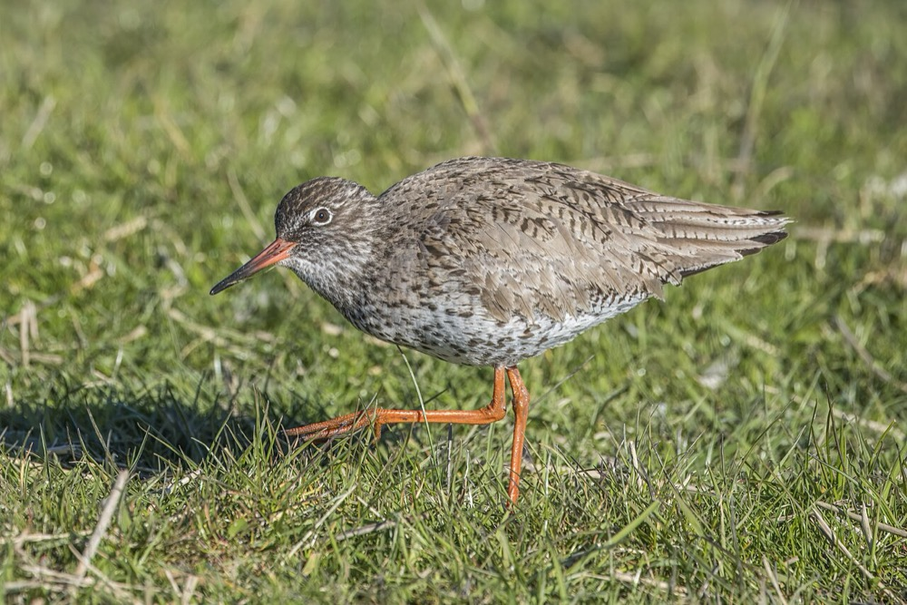
Common redshank Around now
Fluierar cu picioare roșii · Малък червеноног водобегач · Tringa totanus
Medium wader (~27–29 cm), grey-brown and streaky, with bright orange-red legs and a red-based straight bill. In flight shows a broad white trailing edge to the wing and a white rump — diagnostic.
More
Male vs female
Sexes alike; no reliable field separation.
Breeding
Ground-nester in damp meadows, salt-marsh and grassy marsh margins; well-hidden scrape in a tussock. Noisy, anxious "sentinel of the marsh," perching on posts and yodelling. Breeds Apr–June.
Migration
Summer breeder and passage migrant — Present early July: YES (breeders with young; return passage starts from late June/July).
Behaviour & facts
Loud, ringing teu-hu-hu and persistent alarm calling — first to flush and warn other waders. Probes mud for invertebrates.
Where to see
Damp meadows, salt-marsh and muddy lagoon margins across the Delta.
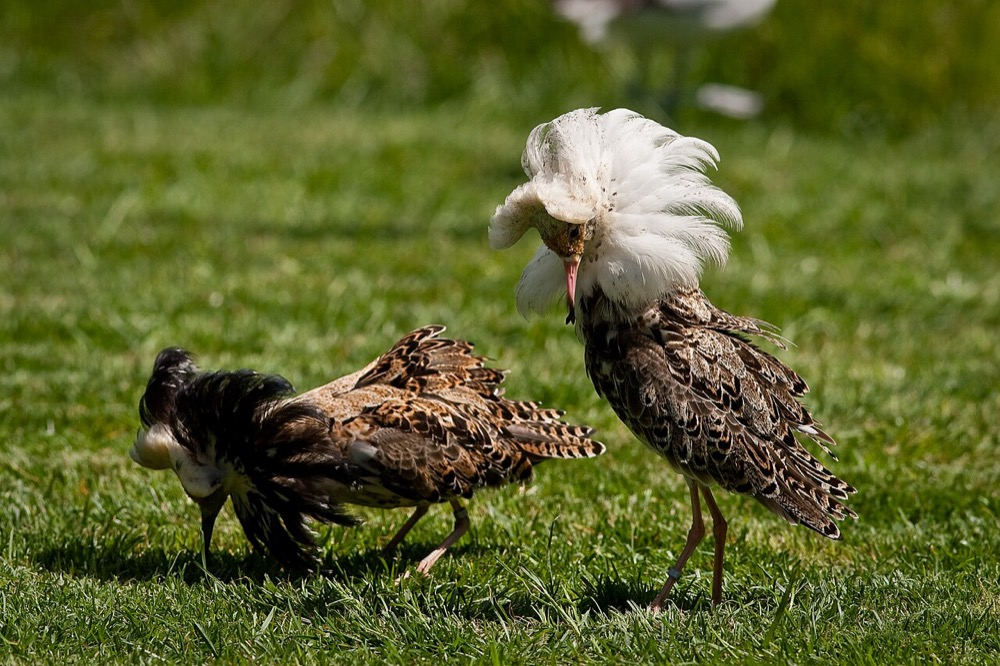
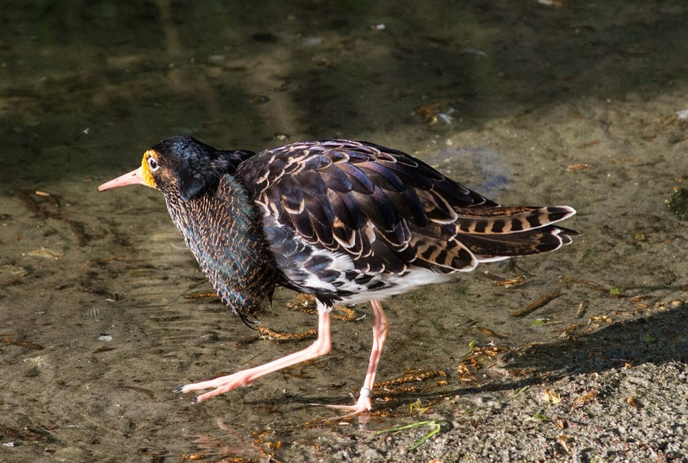
Ruff Not in July
Bătăuș · Бойник · Calidris pugnax
Medium wader with a small head, slightly drooped bill and a pot-bellied, scaly-backed look; orange-yellow to greenish legs. Non-breeding birds are plain and confusingly variable in size.
More
Male vs female
Extreme dimorphism. Breeding males ("ruffs") are far larger and grow flamboyant head tufts and a huge erectile neck ruff in black, white, chestnut or barred — each individual unique — used in communal lek displays. Females ("reeves") are much smaller and plain brown. A rare third male type mimics females.
Breeding
Breeds on far-northern wet tundra and meadows — not in the Delta. Males lek; females nest and raise young alone.
Migration
Passage migrant — Present early July: MOSTLY NO (a few non-breeders may linger, and early southbound females can begin appearing from late June/July; main passage is Aug–Sep). Flagged honestly: not a Delta breeder.
Behaviour & facts
Largely silent away from leks; feeds on invertebrates and seeds on mud and in shallow water, often in mixed wader flocks. The size variation within a flock is itself a clue.
Where to see
Exposed mud, flooded fields and lagoon margins on passage; scan mixed wader flocks.
Odd "wader that flies like a tern/swallow" (~24–28 cm): short-legged, long-winged, fork-tailed, sandy-brown above with a creamy throat ringed by a thin black collar. Short bill with a red base; chestnut underwing-coverts visible in flight.
More
Male vs female
Sexes very similar; the black throat-collar averages slightly bolder/cleaner in the male — not reliably separable.
Breeding
Colonial ground-nester on bare, dry, open ground — salt-flats, dried mud and sparse short-grass steppe near wetlands. Lays directly in a shallow scrape; breeds May–June.
Migration
Summer breeder (long-distance migrant, winters in Africa) — Present early July: YES (breeding on salt-flats).
Behaviour & facts
Catches insects on the wing in fast, agile, tern-like sallies, especially at dusk; gives sharp kik / kirrik calls. A Delta/Black-Sea salt-flat specialty at the edge of its range.
Where to see
Dry salt-flats and bare ground around the Razim–Sinoie lagoon complex and southern Delta.
Small, slim gull (~34–37 cm) with a chocolate-brown hood (not truly black) in breeding plumage, red bill and legs, and a diagnostic white leading edge to the outer wing. In winter the hood reduces to a dark ear-spot.
More
Male vs female
Sexes alike; males average marginally larger.
Breeding
Densely colonial on islands, floating reed mats and lagoon islets; nests May–June. Colonies are noisy and aggressively defended, often sheltering terns within them.
Migration
Breeder, passage and winter visitor — Present early July: YES (breeding colonies and post-breeding flocks).
Behaviour & facts
Highly social and vocal with a harsh laughing kee-arr. Opportunistic feeder — insects, worms, fish scraps, taking insects on the wing. Abundant across the Delta.
Where to see
Lagoons, lakes, fishponds and channels Delta-wide; often the commonest gull.
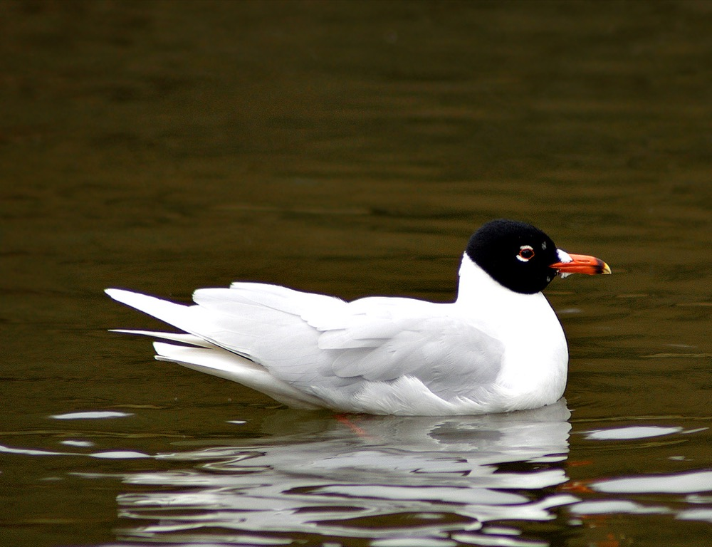
Mediterranean gull Around now
Pescăruș cu cap negru · Малка черноглава чайка · Ichthyaetus melanocephalus
Stocky, clean gull (~36–38 cm) with a true jet-black hood (extending onto the nape), white "eye-crescents," a stout drooping red bill and, in adults, all-white wing-tips (no black). Looks strikingly pale and clean in flight.
More
Male vs female
Sexes alike.
Breeding
Colonial, often nesting within black-headed gull colonies on islets and reed mats; breeds May–June. The Black Sea coast and Delta hold internationally important numbers.
Migration
Summer breeder and passage migrant — Present early July: YES (breeders and family parties).
Behaviour & facts
Distinctive nasal, rising yeah call. Feeds on insects, fish and invertebrates, often over fields and water. Cleaner, whiter-winged look separates it from black-headed gull.
Where to see
Lagoon islets and mixed gull/tern colonies in the southern Delta and coastal lagoons.
Large, powerful gull (~55–67 cm) with a clean white head, mid-grey back, bright yellow legs, a heavy yellow bill with a red gonys spot, and black wing-tips with small white "mirrors." The Delta's default big gull.
More
Male vs female
Sexes alike; males clearly bigger-headed and heavier-billed.
Breeding
Nests on the ground or on islands/buildings, singly or in loose colonies; breeds Apr–June. Adaptable and increasing.
Migration
Largely resident breeder/dispersive — Present early July: YES (year-round, with young around now).
Behaviour & facts
Bold omnivore and kleptoparasite — fish, scraps, eggs and chicks of other waterbirds. Loud, deep laughing calls. The large gull most likely seen patrolling the lakes.
Where to see
Open water, fishponds, harbours and the coast throughout the Delta.
Common tern Around now
Chiră de baltă · Речна рибарка · Sterna hirundo
Graceful "sea swallow" (~31–35 cm) — pale grey above, white below, with a black cap, deeply forked white tail and an orange-red bill with a black tip. Long pointed wings and buoyant, dipping flight.
More
Male vs female
Sexes alike.
Breeding
Colonial ground-nester on bare islets, shell/sand banks and floating mats, often within gull colonies; breeds May–June. Plunge-dives for small fish, which males also present in courtship.
Hovers then plunge-dives for fish; grating kee-yah calls. Aggressively dive-bombs intruders near colonies.
Where to see
Over open lake water and lagoons; colonies on islets and banks.
Little tern Around now
Chiră mică · Белочела рибарка · Sternula albifrons
Tiny, fast-flying tern (~21–25 cm), the smallest in the region. Note the white forehead cutting into the black cap, the yellow black-tipped bill and yellow legs. Rapid, flickering wingbeats and frequent hovering.
More
Male vs female
Sexes alike.
Breeding
Colonial on bare sand, shell and shingle banks very close to water; lays a scrape directly on open substrate. Breeds May–June; highly vulnerable to flooding and disturbance.
Migration
Summer breeder (winters in Africa) — Present early July: YES (breeding on sand/shell banks).
Behaviour & facts
Hovers low and plunge-dives into shallows for tiny fish; sharp, fast kik-kik and chattering calls. Favours dynamic sand spits and beach edges.
Where to see
Sandbars, shell banks and beach edges of the seaward Delta and lagoons.
Whiskered tern Around now
Chirighiță cu obraz alb · Белобуза рибарка · Chlidonias hybrida
The largest, palest "marsh tern" (~24–28 cm). Breeding adults are smart grey with a black cap, white cheek-stripe ("whisker"), dark grey belly and red bill and legs. Less forked tail than the Sterna terns; dips to the surface rather than plunge-diving deeply.
More
Male vs female
Sexes alike.
Breeding
A Delta signature species — nests colonially on floating mats of water-lily leaves and aquatic vegetation on shallow lakes, building floating nests anchored to plants. Breeds May–June.
Migration
Summer breeder — Present early July: YES (working the lily mats, feeding young).
Behaviour & facts
Hawks insects and dips for small fish and amphibians over open water and lily-covered lakes; hoarse kersch calls. Works the water-lily mats — one of the most characteristic sights over the Delta's open lakes.
Where to see
Open lily-covered lakes (e.g. the interior freshwater lakes); often the commonest tern over the water.
White-winged tern (white-winged black tern) Around now
Chirighiță cu aripi albe · Белокрила рибарка · Chlidonias leucopterus
Small marsh tern (~20–24 cm). Breeding adults are stunning: black head, body and underwing-coverts contrasting with pale/white upperwings, white tail and rump — a striking black-and-white pattern. Bill dark red to blackish, legs reddish.
More
Male vs female
Sexes alike.
Breeding
Colonial on floating vegetation and marshy pools, building floating nests like the whiskered tern; breeds May–June. More tied to densely vegetated freshwater marsh.
Migration
Summer breeder and passage migrant — Present early July: YES (breeding/lingering in marshes).
Behaviour & facts
Buoyant, dipping flight hawking insects low over marsh and water; rarely dives deeply. The bold black-and-white breeding pattern makes it one of the Delta's most beautiful terns.
Where to see
Vegetated freshwater marshes, flooded reed margins and shallow lily lakes.
Birds of prey
Western marsh harrier Around now
Erete de stuf · Тръстиков блатар · Circus aeruginosus
The largest and most robust European harrier, a wetland raptor of reedbeds and lake margins. Length ~48–56 cm, wingspan ~115–130 cm. Recognise it by its distinctive slow, buoyant low quartering flight a few metres over the reeds, wings held in a shallow V (dihedral) as it rocks and tilts, hunting on the wing. Lacks the white rump shown by other harriers.
More
Male vs female
Strongly sexually dimorphic. The male is tricolour — reddish-brown body, pale grey head/shoulders, and grey wings with sharply contrasting black wingtips. The female (and juveniles) is mostly dark chocolate-brown with a creamy-yellow crown, throat and forewing patch. Females are noticeably larger and heavier than males.
Breeding
A summer breeder in the delta. Nests on the ground deep within large stands of reed (Phragmites) and dense marsh vegetation, building a platform of reed stems; among the most characteristic breeding raptors of the Danube Delta reedbeds.
Migration
Summer breeder (most birds migrate to Africa/Mediterranean for winter). Present early July: YES (actively breeding and hunting over the reedbeds in mid-summer).
Behaviour & facts
Hunts by slow low flight, dropping onto small mammals (especially voles), birds, frogs, reptiles and large insects taken from the water's edge. Generally silent away from the nest. Conservation status Least Concern; recovered strongly after historical declines from drainage and pesticides. One of the signature reedbed raptors of the delta.
Where to see
Quartering low over the open reedbeds and channel edges of almost any delta lake — watch for the rocking, V-winged silhouette over Lake Roșu, Matița and Furtuna.
White-tailed eagle Around now
Codalb · Морски орел · Haliaeetus albicilla
A huge fish/sea eagle and the flagship raptor of the delta. Length ~70–90 cm, wingspan ~1.8–2.4 m — Europe's largest eagle. Unmistakable in flight as a massive "flying barn door": very broad, long, plank-like rectangular wings held flat, a protruding vulture-like head and neck, and a short, wedge-shaped tail. Adults show a pale head, heavy yellow bill and a clean white tail.
More
Male vs female
Sexes look alike in plumage; the female is distinctly larger and heavier than the male. Adults take about 5 years to gain the pale head and white tail — juveniles are darker and more mottled with a dark tail.
Breeding
Resident breeder. Builds an enormous stick nest, reused and added to over years, high in old large trees (poplar, willow) on the Danube's forested islands and riparian woodland; pairs are strongly territorial and breed early in the year.
Migration
Resident year-round in the delta. Present early July: YES (resident adults and fledged/fledging young present through summer).
Behaviour & facts
Opportunistic hunter and scavenger — takes fish (often snatched from the surface), waterbirds (coots, ducks), and carrion; frequently pirates prey from other birds. A genuine conservation success story: recovered across Europe after persecution, DDT and habitat loss, and the Danube Delta now holds one of the region's most important breeding populations. Main remaining threats include power-line electrocution, disturbance and wetland loss.
Where to see
Scan tall lakeside trees and open skies over the larger lakes and Danube channels — perched dark and hunched on a snag, or soaring on those vast flat wings over Lake Furtuna, Matița and the main branches.
Eurasian hobby Around now
Șoimul rândunelelor · Сокол орко · Falco subbuteo
A small, slim, dashing falcon. Length ~29–36 cm, wingspan ~74–84 cm. Recognise it by its long, narrow, pointed scythe-shaped wings and swift, agile, swallow-like flight — almost like a giant swift. Slate-grey above, heavily streaked below, with a bold black-and-white face pattern (dark moustache) and, on adults, rusty-red "trousers" and vent.
More
Male vs female
Sexes are similar in plumage; the female averages slightly larger. Males tend to have brighter rufous thighs/undertail; juveniles lack the red and are buffier below with pale-fringed upperparts.
Breeding
Summer breeder. Does not build its own nest — it takes over the old stick nest of another bird (typically a crow) in a tree, often near water or woodland edge; a notably late breeder, timing chicks to the late-summer abundance of insects and young birds.
Migration
Summer breeder, wintering in sub-Saharan Africa. Present early July: YES (on territory and breeding through the delta summer).
Behaviour & facts
A spectacular aerial hunter — catches dragonflies and other large insects in flight (often eaten on the wing) and takes small birds such as swallows, martins and swifts in fast stoops at dusk. Call a clear, repeated "kew-kew-kew." Status Least Concern. Over the delta's insect-rich wetlands it is a regular and dramatic sight, hawking over reeds and water at dawn and dusk.
Where to see
Watch open skies over the lakes and reed channels at dawn and dusk, where hobbies hawk dragonflies and chase hirundines low over the water — anywhere with open air above Lake Roșu, Matița or the Sontea channels.
Kingfisher, bee-eater, roller & hoopoe (the jewel-coloured ones)
Tiny, dazzling jewel of a bird, 16–17 cm, wingspan ~25 cm. Electric blue-green above, burnt-orange below, with a long dagger bill and stubby tail. Usually seen as a low, fast, whirring blue streak over the water.
More
Male vs female
Subtly dimorphic — the bill tells them apart: male's lower mandible is all black; female's lower mandible is orange-red at the base. Plumage otherwise identical.
Breeding
Excavates a long nest tunnel in a vertical earth/sand bank over water; pairs are territorial. Breeds spring–summer, often two or more broods.
Migration
Resident (hard weather can force local movements) — Present early July: YES (resident and breeding).
Behaviour & facts
Plunge-dives headfirst from a low perch or hover to snatch small fish, then beats them on a branch before swallowing head-first. Announces itself with a shrill, high "zeee" whistle as it speeds past.
Where to see
A blue flash low along channels and lake edges; perched on overhanging twigs and reed stems above the water.
European bee-eater Around now
Prigorie · Обикновен пчелояд · Merops apiaster
Spectacularly multicoloured, 27–29 cm (incl. tail streamers), wingspan ~36–40 cm. Chestnut-and-gold back, turquoise underparts, yellow throat, a black eye-mask and a long decurved bill, with pointed central tail-feathers. Slim, swallow-like in flight.
More
Male vs female
Slightly dimorphic — male's wing-coverts and scapulars are richer chestnut-gold; female's are greener/duller with more uniform tones. Juveniles are duller and lack the tail streamers.
Breeding
Colonial, excavating long nest burrows in sandy banks, dykes, dunes and quarry faces; breeds in summer. Loose, sociable colonies.
Migration
Summer breeder, arriving late Apr–May, leaving Aug–Sep for Africa — Present early July: YES (breeding; very active and conspicuous).
Behaviour & facts
Aerial insect-hawker specialising in bees, wasps and dragonflies — de-stings prey by rubbing it on a perch. Constant liquid, rolling "prruip" calls overhead announce passing flocks. Highly social, perching in lines on wires and dead branches.
Where to see
Hawking insects over the lake edges, dykes and warm grassland; listen for the rolling calls and scan wires and bare snags near sandy banks.
European roller Around now
Dumbrăveancă · Синявица · Coracias garrulus
Crow-sized but brilliant, 29–32 cm, wingspan ~52–58 cm. Bright sky-blue head and underparts with a warm cinnamon-brown back; in flight the wings flash dazzling deep-blue and turquoise. Stout black bill; upright perched posture.
More
Male vs female
Sexes very similar; male often slightly brighter and more saturated blue, female marginally duller — not safely separable in the field. Juveniles are noticeably duller and browner.
Breeding
Cavity nester — uses old woodpecker holes, tree hollows and nest boxes (also holes in banks/buildings); breeds in summer. Favours open country with scattered trees.
Migration
Summer breeder, arriving early May, leaving Aug–Sep for Africa — Present early July: YES (breeding).
Behaviour & facts
Sit-and-wait predator — drops from a prominent perch onto large insects, lizards and small prey on the ground. Named for the male's tumbling, "rolling" display flight. Often perches conspicuously on wires and dead branches.
Where to see
Perched on wires, posts and bare branches over open ground and dyke edges around the delta fringe; the electric-blue wing-flash when it drops to feed is unmistakable.
Hoopoe Around now
Pupăză · Папуняк · Upupa epops
Unmistakable, 25–29 cm, wingspan ~44–48 cm. Pinkish-cinnamon body with boldly black-and-white barred wings and tail, a long decurved bill, and a spectacular fan-shaped erectile crest (often held flat, raised on landing). Floppy, butterfly-like flight.
More
Male vs female
Sexes very similar; male averages slightly more richly coloured/pinker, female a touch greyer-buff on the underparts — not reliably separable. Juveniles duller with a shorter bill.
Breeding
Cavity nester in tree holes, walls, banks and nest boxes; breeds spring–summer. The nest becomes famously foul-smelling (a defence against predators).
Migration
Summer breeder, arriving Mar–Apr, leaving Aug–Sep for Africa — Present early July: YES (breeding).
Behaviour & facts
Probes soft ground with its long bill for insect larvae (especially mole-crickets and beetle grubs). Named onomatopoeically for the soft, far-carrying "oop-oop-oop" song. Flashes the broad barred wings in undulating flight.
Where to see
Feeding on bare and short-grass ground, tracks, dykes and village edges around the delta; the barred wings and crest are unmistakable when it flushes.
Reedbed & wetland songbirds
Bearded reedling (bearded tit) Around now
Pițigoi de stuf · Мустакато тръстикарче · Panurus biarmicus
Small, long-tailed, tawny-cinnamon reedbed bird (~16–17 cm, much of it tail). Whirring flight low over the reeds; usually detected first by its distinctive ping calls.
More
Male vs female
Strongly dimorphic. Male has a blue-grey head with a bold black "moustache" (drooping malar stripe, not a true beard) and black undertail-coverts. Female is plainer warm-buff with a brown head and no moustache.
Breeding
Resident reedbed specialist; builds a nest low among dense reed stems and litter over water. Highly productive — can raise several broods between Apr and Aug.
Migration
Resident — Present early July: YES (year-round in the reedbeds).
Behaviour & facts
Switches diet from insects in summer to reed seeds in winter, even growing a tougher gizzard seasonally. Acrobatic, straddling two stems; very social in family parties. Thrives in the Delta's vast continuous reedbeds.
Where to see
Extensive Phragmites reedbeds fringing the lakes and channels — listen for the ping.
Eurasian penduline tit Around now
Boicuș · Торбогнезден синигер · Remiz pendulinus
Tiny (~10–11 cm), pale grey-headed bird with a black bandit's mask through the eye and a chestnut back. Slender, sharply pointed bill. Easily overlooked but for its thin, plaintive tsee call.
More
Male vs female
Mild dimorphism — male has a broader, blacker mask and richer chestnut back; female's mask is narrower and duller.
Breeding
Famous for its elaborate hanging, purse-shaped woven nest suspended from the drooping branch tips of willows and poplars over or near water, with a tubular side entrance. Breeds Apr–June; complex, variable mating system where either parent may desert.
Migration
Summer breeder / short-distance migrant — Present early July: YES (breeders and young near waterside trees).
Behaviour & facts
Gleans insects, spiders and seeds from reeds and waterside trees. The intricately felted nest, built from plant down and fibres, is a Delta natural-history highlight.
Where to see
Willows, tamarisk and poplars along channels and lake edges — scan for the hanging nests.
Great reed warbler Around now
Lăcar mare · Тръстиково шаварче · Acrocephalus arundinaceus
The largest European reed warbler (~16–20 cm, almost thrush-sized), warm brown above, buff-white below, with a long, strong dagger-like bill and a faint pale eyebrow. Often sings from an exposed reed top.
More
Male vs female
Sexes alike in plumage; males average larger — not separable in the field.
Breeding
Weaves a deep cup-nest lashed around several vertical reed stems over water; breeds May–June. Males are often polygynous, holding territories advertised by relentless song.
Migration
Summer breeder (winters in Africa) — Present early July: YES (singing/feeding young; song eases through July).
Behaviour & facts
Famous for its loud, far-carrying, grating song — a rhythmic karra-karra-kreet-kreet-gurk-gurk that dominates the reedbed soundscape. Feeds on large insects, and takes frogs and small fish.
Where to see
Tall reed stands at lake and channel margins — listen for the booming, croaking song.
Eurasian reed warbler Around now
Lăcar de stuf · Блатно шаварче · Acrocephalus scirpaceus
Small, plain, unstreaked warm-brown warbler (~12–14 cm) with whitish underparts, a gently rounded head and fine pointed bill. Best identified by song and habitat — a textbook "little brown job."
More
Male vs female
Sexes alike.
Breeding
Builds a deep, neat cylindrical nest woven around reed stems over water; breeds May–July, often double-brooded. A frequent host of the common cuckoo.
Migration
Summer breeder (winters in Africa) — Present early July: YES (abundant and breeding in the reeds).
Behaviour & facts
Song is a steady, unhurried, rhythmic chattering churr — less explosive than the great reed warbler's. Gleans insects low in the reeds; climbs stems acrobatically. One of the most numerous reedbed birds.
Where to see
Reedbeds and reedy ditches throughout the Delta — ubiquitous but skulking.
Robin-sized chat (~13–14 cm), warm brown above, with rusty-red patches at the base of the tail (flashed in flight) and a pale eyebrow. The throat is the showpiece.
More
Male vs female
Strongly dimorphic. Breeding male has a brilliant blue throat bordered below by black, white and a broad rusty band, with a central white spot (white-spotted cyanecula, the form in the Delta region). Female has a whitish throat outlined by a dark necklace, lacking the blue — much plainer.
Breeding
Nests low or on the ground in dense, damp vegetation at reed and scrub margins; breeds May–June. Males sing from a perch or in a short song-flight.
Migration
Summer breeder and passage migrant — Present early July: YES (breeders present; skulking more once song declines).
Behaviour & facts
A superb, varied songster and accomplished mimic, often singing at dawn. Feeds on insects on damp ground, flicking its rusty-sided tail. Skulking but will perch up to sing.
Where to see
Damp scrub, willow and reed-edge tangles bordering channels and wet meadows.
Common cuckoo Around now
Cuc · Обикновена кукувица · Cuculus canorus
Slim, long-tailed grey bird (~32–34 cm) with a falcon-like silhouette in flight — pointed wings, barred white underparts and a longish rounded tail. Often mistaken for a Sparrowhawk on the wing.
More
Male vs female
Males are grey. Females occur in two morphs — a grey morph like the male and a scarcer rufous (hepatic) morph that is brown and heavily barred above. Both sexes show barred underparts.
Breeding
A brood parasite — lays single eggs in the nests of host songbirds (in the Delta, reed warblers are prime hosts). The cuckoo chick ejects the host's own eggs/young and is raised by the duped foster parents. Does not build a nest or rear its own young.
Migration
Summer visitor (winters in Africa) — Present early July: YES, but the familiar cuck-oo call largely ceases by late June/early July, and adults are among the earliest migrants to depart (from July). Young birds linger and migrate later.
Behaviour & facts
The male's far-carrying cuck-oo is the classic spring sound; females give a bubbling chuckle. Specialises in eating hairy caterpillars that most birds avoid. Watch reed warbler hosts for parasitism.
Where to see
Reedbed and scrub edges around the lakes — heard more than seen, calling most in late spring.
Sand martin Around now
Lăstun de mal · Брегова лястовица · Riparia riparia
The smallest European hirundine (~12 cm), brown above and white below with a neat brown breast-band across the white throat. Slightly forked tail; fast, fluttery, agile flight low over water.
More
Male vs female
Sexes alike.
Breeding
Highly colonial — excavates nest burrows in vertical sandy/earth banks along rivers, channels and eroding shores, sometimes hundreds of holes together. Breeds May–June, often double-brooded.
Migration
Summer breeder (winters in Africa) — Present early July: YES (active colonies, hawking insects over the water; flocks build for migration through late summer).
Behaviour & facts
Catches insects on the wing low over water and reedbeds; dry, rasping twittering calls around colonies. The Delta's earthen riverbanks and dykes provide abundant colony sites.
Where to see
Over open water and reedbeds, and at sandy/earth riverbank colonies along the channels.
Photo credits & licences (74 images)
Great white pelican
great-white-pelican.jpg — Charles J. Sharp, Wikimedia Commons, CC BY-SA 4.0
Great white pelican
great-white-pelican-2.jpg — Charles J. Sharp, Wikimedia Commons, CC BY-SA 4.0
Dalmatian pelican
dalmatian-pelican.jpg — Dr. Raju Kasambe, Wikimedia Commons, CC BY-SA 4.0
Great cormorant
great-cormorant.jpg — MPF, Wikimedia Commons, CC BY-SA 4.0
Pygmy cormorant
pygmy-cormorant.jpg — Warrieboy, Wikimedia Commons, CC BY-SA 4.0
Grey heron
grey-heron.jpg — Alexis Lours, Wikimedia Commons, CC BY 4.0
Purple heron
purple-heron.jpg — José Prego, Wikimedia Commons, CC BY 2.0
Great egret
great-egret.jpg — Chuck Homler (FocusOnWildlife.Me), Wikimedia Commons, CC BY-SA 4.0
Little egret
little-egret.jpg — Shantanu Kuveskar, Wikimedia Commons, CC BY-SA 4.0
Squacco heron
squacco-heron.jpg — Pierre Dalous, Wikimedia Commons, CC BY-SA 3.0
Squacco heron
squacco-heron-2.jpg — Charles J. Sharp, Wikimedia Commons, CC BY-SA 4.0
Black-crowned night heron
black-crowned-night-heron.jpg — ramidos, Wikimedia Commons, CC BY 4.0
Little bittern
little-bittern.jpg — Andreas Trepte, Wikimedia Commons, CC BY-SA 4.0
Little bittern
little-bittern-2.jpg — Ferran Pestaña, Wikimedia Commons, CC BY-SA 2.0
Great bittern
great-bittern.jpg — Francesco Veronesi, Wikimedia Commons, CC BY-SA 2.0
Cattle egret
cattle-egret.jpg — Kora27, Wikimedia Commons, CC BY-SA 4.0
Glossy ibis
glossy-ibis.jpg — Chuck Homler / Focus On Wildlife, Wikimedia Commons, CC BY-SA 4.0
Eurasian spoonbill
eurasian-spoonbill.jpg — Andreas Trepte, Wikimedia Commons, CC BY-SA 2.5
Mute swan
mute-swan.jpg — Sanchezn, Wikimedia Commons, CC BY-SA 3.0
Greylag goose
greylag-goose.jpg — David Iliff (Diliff), Wikimedia Commons, CC BY-SA 3.0
Red-breasted goose
red-breasted-goose.jpg — Adrian Pingstone (Arpingstone), Wikimedia Commons, Public Domain
Mallard
mallard.jpg — Alain Carpentier, Wikimedia Commons, CC BY 3.0 (drake)
Mallard
mallard-2.jpg — Alain Carpentier, Wikimedia Commons, CC BY 3.0 (hen)
Garganey
garganey.jpg — Stefan Berndtsson, Wikimedia Commons, CC BY 2.0 (drake)
Garganey
garganey-2.jpg — Ferran Pestaña, Wikimedia Commons, CC BY-SA 2.0 (hen)
Northern shoveler
northern-shoveler.jpg — Andreas Trepte, www.avi-fauna.info, Wikimedia Commons, CC BY-SA 2.5 (drake)
Northern shoveler
northern-shoveler-2.jpg — Charles J. Sharp, Wikimedia Commons, CC BY-SA 4.0 (hen)
Common Pochard
common-pochard.jpg — Luis Nunes Alberto, Wikimedia Commons, CC BY 3.0 (drake)
Common Pochard
common-pochard-2.jpg — Klamul, Wikimedia Commons, CC BY-SA 4.0 (hen)
Red-crested Pochard
red-crested-pochard.jpg — Mourad Harzallah, Wikimedia Commons, CC BY 4.0 (drake)